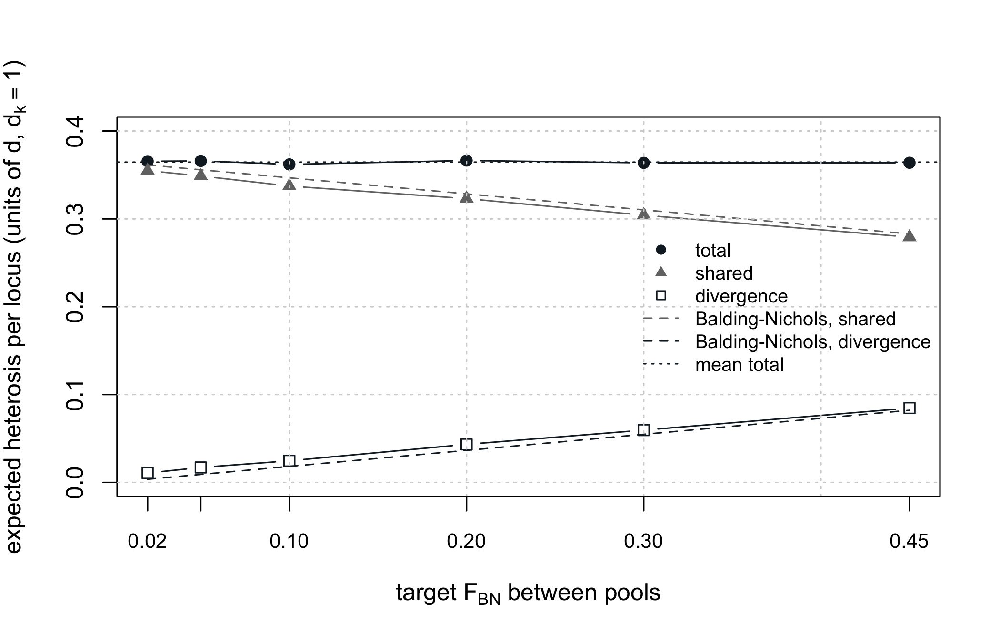
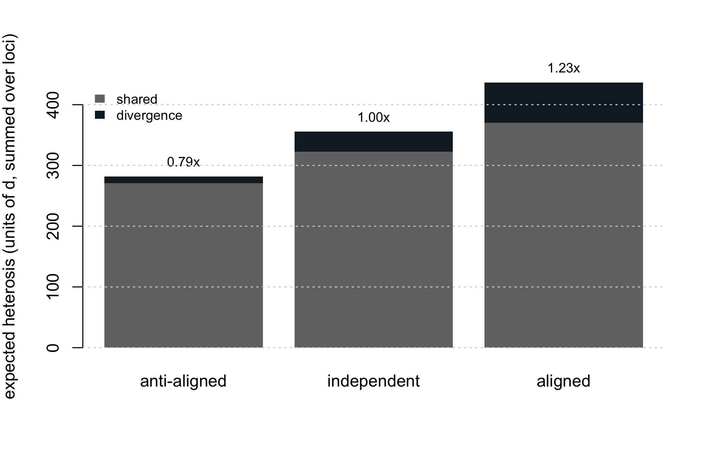
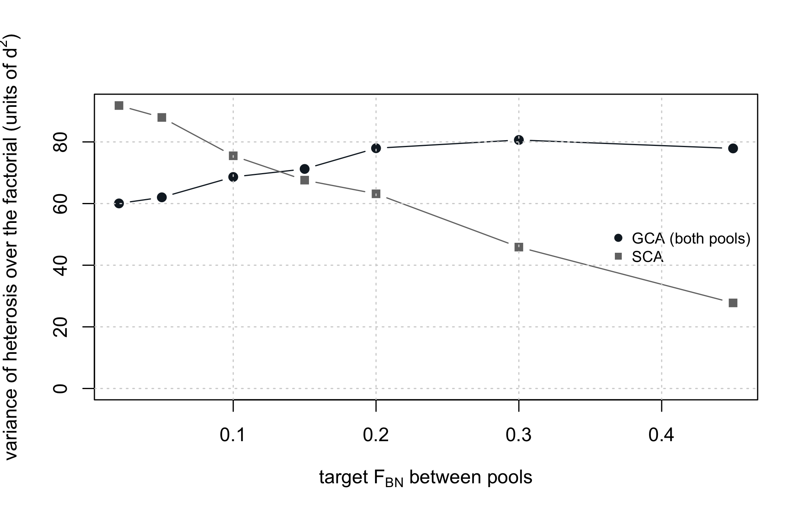

Show code
cat(deparse(heterosis_value), sep = "\n")
#> function (X, d)
#> {
#> stopifnot(length(d) == ncol(X))
#> drop((X == 0.5) %*% d)
#> }Since Chapter 3 this book has repeated a claim without proving it: that the divergence between the heterotic pools is the engine of heterosis, and is therefore to be maintained rather than minimised. Chapter 11 will decompose diversity on that basis and Chapter 13 will build a monitoring panel around it. The claim has carried a lot of weight for an assertion.
The chapters before this one announce what it supplies. Chapter 1 states the identity numerically and hands its derivation here (Section 5.4) together with the dominance part of the combining-ability model of Equation 1.1 (Section 5.11); Chapter 2 introduces the dominance effects \(d_k\) and the heterosis \(H_i\) of Equation 5.3, derived below; Chapter 3 gives the partition the identity is stated in (Table 3.6); and Chapter 4 states two facts about combining ability – without dominance a line’s GCA is the same against any tester set, with dominance it is evaluated at the other pool’s frequencies – and refers the derivation to Section 5.11.
This chapter derives the claim, and then corrects it. The derivation is short and the identity is exact, under the conditions stated at each use: flat dominance, inbred parents and the complete \(A \times B\) factorial. It has two halves. At a given \(GD_T\) (total gene diversity) – the quantity the \(\alpha\) budget constrains (Table 3.6) – expected heterosis is \(GD_T + GD_{BS}\) (Equation 5.6), so a loss of \(GD_{BS}\) (the between-pool component) is a loss of expected heterosis, one for one: that is the sense in which the divergence is maintained. The correction concerns the other half: the reading of the identity that this chapter corrects is push the pools apart and you will get more heterosis. It is put here as the natural reading; it is not attributed to any author and no source is cited for it. That reading is false. Under neutral divergence expected heterosis does not move, in expectation over the draw of the pools (Equation 5.10), and the sweep of Section 5.8, one draw per row, is consistent with it.
The chapter then goes one step past the mean. Expected heterosis is what a pool pair is worth on average; what a breeder selects on is how heterosis is distributed across the crosses of the factorial. Those are different questions with different answers, and the second one is where general and specific combining ability (GCA, SCA) come from.
The derivations come first and Section 5.13 turns them into the eight steps that compute them on a real programme’s data, with the check and the failure mode of each one. Read that section first if the question is what to run rather than why it holds.
The data come from simulate_lines() and simulate_data(), drawn with the generator Chapter 6 builds (in the Simulation part that follows), and the fst sweep of Section 5.8 redraws the pools from it; pool_complementarity() supplies the three complementarity columns of the S1 panel (s1_monitor(); S1 is defined in Table 1.1 and the panel in Chapter 13).
Three premises carry everything below. They are stated here once, because every result in the chapter uses all three and two of them are restrictive.
Parents are fully inbred. Every parent line is homozygous at every locus, so an F1’s marker row is the average of its two parents’ rows and a locus is heterozygous in the F1 exactly when the parents differ. This is what makes the additive effects cancel from the mid-parent difference and what makes GD_WI zero. Note that this is a property of the programme, not of the mating system: the programme modelled here is that of an allogamous, maize-type crop with two heterotic pools under reciprocal recurrent selection (a modelling choice; no source for the heterotic-group system is cited in this chapter). Doubled-haploid (DH) induction or selfing to fixation is what delivers homozygous parents from it. Nothing here transfers to a programme crossing non-inbred parents (an inter-population cross, a synthetic, parents selfed once) without re-derivation, and Section 5.13.1 measures how large the error is if the formulae below are applied anyway: a multiple of the true gain, not a few per cent.
The genotypic model is dominance within loci and additivity between them. There is no epistatic term anywhere below: the genotypic value is a sum over loci, \(H_i\) is a sum of per-locus indicators, and the combining-ability expansion of Section 5.11 is bilinear only because no term couples two loci. Labroo et al. (2021) review epistasis alongside dominance as a proposed mechanism for heterosis; this model excludes it, and no result below should be read as evidence about it. What \(d_k\) does absorb is every within-locus story, as Section 5.2.2 sets out.
The marker panel is the set of dominance loci. \(d_k\) is indexed by the same \(k\) as the markers, so every locus carrying dominance is genotyped and the frequency statistics are computed on exactly the loci that generate heterosis. This is the strongest assumption of the three, and it is the one that carries the distance results of Section 5.7. A real panel tags causal loci through linkage disequilibrium rather than containing them, which weakens every statement below about markers predicting heterosis but does not change the algebra, since the algebra is written over whatever set \(k\) indexes. A related choice: every number below that depends on \(d\) (the correlation with marker distance, the alignment factor, the SCA shares) uses one draw of \(d_k\) from a gamma distribution (shape 2, rate 4, seed 4), positive at every locus and the same at every pool pair and scale, which is an illustrative assumption and not an estimate. The chapter does not vary it; the algebra holds for any \(d\), the magnitudes do not.
The classical parameterisation puts the origin at the midpoint of the two homozygotes: one homozygote is worth \(+a\), the other \(-a\), and the heterozygote \(d\). Under random mating at frequency \(p\), with \(q = 1 - p\), the population mean is (Falconer and Mackay 1996, Ch. 7)
\[M = a\,(p - q) + 2pq\,d \tag{5.1}\]
The first term is the additive contribution, and the mid-parent of any cross already carries it. The second is the dominance contribution. It is the only part of \(M\) that depends on how many heterozygotes there are, and therefore the only part a cross can add over its own mid-parent.
The symbols in Equation 5.1 are the textbook ones. This book’s additive marker effects are \(\beta_k\) (estimated in Chapter 14, later), and its \(\alpha\) is the diversity-loss statistic of Chapter 11, not the classical average effect of a substitution. The per-locus \(a_k\) reappears below and never as a result: in the genotypic-value model (Equation 5.2) used to show that it cancels, in the additive part of the GCA of the cross mean (Section 5.11) and of the two-way layout of Section 5.13, and, written without the index, in the definition of overdominance as \(|d| > |a|\) and in the average effect of a substitution \(a + d(q - p)\) (Section 5.11.1). No quantity this chapter reports depends on it.
\(d_k\) is the dominance effect at locus \(k\): the functional dominance, the departure of the heterozygote from the homozygote midpoint (the heterozygote value on the \(a\), \(d\), \(-a\) scale of Equation 5.1). It is a property of the locus. It does not move when allele frequencies move. This chapter, Chapter 1, Chapter 2, Chapter 3 and Chapter 4 call \(d_k\) the dominance effect and nothing else; the phrase dominance deviation is kept for the object that follows. Other chapters (Chapter 10 among them) still use the older name for \(d_k\); it is a difference of wording and not a different quantity.
Fisher’s statistical dominance deviation (Fisher 1918; Falconer and Mackay 1996, Ch. 7) is a different object: the residual left after projecting genotypic values onto the best additive model in a particular population. It is a property of the population as much as of the locus, and it changes when frequencies change.
Both appear in this chapter, and keeping them apart is the whole trick. \(d_k\) is the input. The specific combining ability of Section 5.11 is the statistical dominance deviation that a given \(d_k\) induces over a given pair of pools. One is a constant; the other is an answer that depends on where the pools happen to sit.
The distinction also buys the model what generality it has, and marks where that generality stops. Dominance, overdominance (a heterozygote outside both homozygotes, \(|d| > |a|\)) and pseudo-overdominance (two dominant favourable alleles in repulsion phase, too close for any marker to separate) are three different biological stories, and Labroo et al. (2021) review the evidence for each. At marker resolution they are the same arithmetic: a locus at which the F1 gains something the mid-parent does not. A single \(d_k\) absorbs all three, and nothing below can distinguish them – nor needs to. Epistasis is the fourth story on Labroo et al. (2021)’s list and \(d_k\) does not absorb it, because a single per-locus number cannot represent a term that depends on two loci at once. That is the second premise of Section 5.1 (dominance within loci, additivity between), and it is an exclusion rather than an approximation.
Code a genotype by \(x_k \in \{0, 0.5, 1\}\), the frequency of the reference allele within the individual, and take the genotypic value to be the additive part plus the dominance effect at every heterozygous locus:
\[G(\mathbf{x}) = \sum_k a_k\,(2x_k - 1) + \sum_k d_k\,\mathbb{1}\{x_k = 0.5\} \tag{5.2}\]
The parents are fully inbred, so each is homozygous at every locus and the F1’s row is the average of its two parents’ rows. The additive part is linear in \(\mathbf{x}\), so the two parents’ additive values average exactly to the F1’s own and cancel from the mid-parent difference. What survives is the dominance effect at the loci where the F1 is heterozygous:
\[H_i = \sum_k d_k \, \mathbb{1}\{x_{ik} = 0.5\} \tag{5.3}\]
The additive effects never appear. That is the result, not an omission, and it is why heterosis_value() takes no additive-effect argument:
cat(deparse(heterosis_value), sep = "\n")
#> function (X, d)
#> {
#> stopifnot(length(d) == ncol(X))
#> drop((X == 0.5) %*% d)
#> }Against the literal oracle of Appendix C, which loops over loci and compares the two parents’ genotypes one at a time, on 25 hybrids drawn at random from the factorial (so that both pools’ line indexing is exercised; Table 5.1):
set.seed(12) # 25 random hybrids, not the first 25 rows
i25 <- sample(ctx$N, 25)
# ref_heterosis() takes the 0/2 line matrix L; the line-level functions of the
# package take 0/1 (see the protocol section)
oracle_gap <- max(abs(heterosis_value(ctx$X[i25, , drop = FALSE], d) -
ref_heterosis(L, ctx$ped[i25, ], d)))
stopifnot(oracle_gap < 1e-9)
kv(c(max_abs_difference = oracle_gap), sig = TRUE)heterosis_value() and the literal oracle ref_heterosis() over 25 hybrids drawn at random from the full factorial (seed 12), in units of \(d\).
| quantity | value |
|---|---|
| max_abs_difference | 0 |
The cancellation is worth seeing directly. Draw additive effects at random, score a real F1 and its two parents under \(G(\mathbf{x})\), and subtract (Table 5.2):
set.seed(9) # the cancellation is exact for any a; seed it anyway
a <- rnorm(ctx$m, 0, 0.2)
val <- function(x) sum(a * (2 * x - 1)) + sum(d * (x == 0.5))
i <- 7
mid <- (val(L[ctx$ped$a[i], ] / 2) + val(L[ctx$ped$b[i], ] / 2)) / 2
kv(c(mid_parent_difference = val(ctx$X[i, ]) - mid,
heterosis_value = heterosis_value(ctx$X[i, , drop = FALSE], d)), 6)heterosis_value() (Equation 5.3), in units of \(d\).
| quantity | value |
|---|---|
| mid_parent_difference | 362.3386 |
| heterosis_value | 362.3386 |
The additive effects entered the first number and cancelled out of it; they never entered the second.
Write \(p_{Ak}\) and \(p_{Bk}\) for the reference-allele frequencies at locus \(k\) in the two pools, each computed over that pool’s lines. A locus is heterozygous in the F1 when the two gametes carry different alleles, which for a cross drawn at random between the pools happens with probability \(p_A(1 - p_B) + (1 - p_A)p_B\). The expected heterosis over all \(A \times B\) crosses therefore follows from the pool frequencies alone:
\[\mathbb{E}[H] = \sum_k d_k \left[\, p_{A k} + p_{B k} - 2 p_{A k} p_{B k} \right] \tag{5.4}\]
The candidate set here is the full factorial, every \(A \times B\) pairing exactly once, and the frequencies are the means of those same lines. The closed form is then the mean of the realised values as an identity rather than an approximation, and the residual is at machine precision (Table 5.3):
stopifnot(isTRUE(all.equal(heterosis_expected(pA, pB, d),
mean(heterosis_value(ctx$X, d)))))
kv(c(abs_difference = abs(heterosis_expected(pA, pB, d) - mean(heterosis_value(ctx$X, d)))),
sig = TRUE)heterosis_expected() (Equation 5.4) and the mean of heterosis_value() over the 625 crosses of the full factorial, in units of \(d\).
| quantity | value |
|---|---|
| abs_difference | 1.137e-13 |
That is a mean over \(N =\) 625 crosses, and a mean is not a ranking. Hold on to the question of how the individual crosses are spread around it; Section 5.11 answers it exactly.
Now split the bracket. Writing \(\bar p = (p_A + p_B)/2\) and \(y = p_A - p_B\), the per-locus F1 heterozygosity separates exactly:
\[p_A + p_B - 2 p_A p_B \;=\; \underbrace{2 \bar p (1 - \bar p)}_{\text{shared}} \;+\; \underbrace{y^2 / 2}_{\text{divergence}} \tag{5.5}\]
The first term is the heterozygosity a single merged pool at frequency \(\bar p\) would produce under random mating. The second is what keeping the pools apart adds on top of it. Average both over loci with \(d_k \equiv 1\), so that the weighting does not obscure the algebra, and they are exactly the \(GD_T\) and \(GD_{BS}\) of the partition of Caballero and Toro (2002) that Chapter 3 derived and gd_partition() computes (Table 5.4):
hp <- heterosis_partition(pA, pB, rep(1, ctx$m)) / ctx$m
gp <- gd_partition(seq_len(ctx$N), ctx)
stopifnot(isTRUE(all.equal(hp[["shared"]], gp[["GD_T"]], tolerance = 1e-12)),
isTRUE(all.equal(hp[["divergence"]], gp[["GD_BS"]], tolerance = 1e-12)))
fmt(data.frame(term = c("shared", "divergence"),
heterosis = c(hp[["shared"]], hp[["divergence"]]),
partition = c(gp[["GD_T"]], gp[["GD_BS"]]),
residual = c(abs(hp[["shared"]] - gp[["GD_T"]]),
abs(hp[["divergence"]] - gp[["GD_BS"]]))), 12)heterosis_partition() (Equation 5.5), beside \(GD_T\) and \(GD_{BS}\) of gd_partition() on the full A x B factorial of the book’s teaching scale (25 + 25 inbred lines, 2000 markers). Residual: absolute difference between the two columns.
| term | heterosis | partition | residual |
|---|---|---|---|
| shared | 0.3280928 | 0.3280928 | 0 |
| divergence | 0.0335968 | 0.0335968 | 0 |
The divergence term, \(\sum_k d_k\,y_k^2/2\), is the divergence half of expected heterosis, and with flat dominance (\(d_k \equiv 1\)), inbred parents and the complete factorial it is \(GD_{BS}\) itself. Under those conditions “between-pool divergence is the heterosis engine” is an identity, not a slogan; with a \(d_k\) that varies across loci \(GD_{BS}\) is its unweighted version and the identity holds for the weighted term only.
One thing to be clear about before reading on. \(GD_T\) is the gene diversity of the merged population, and by Chapter 3 it already contains \(GD_{BS}\): with inbred lines, \(GD_T = GD_{BI} + GD_{BS}\). Expected F1 heterozygosity is therefore \(GD_{BI} + 2\,GD_{BS}\), the between-pool component counted twice – once inside the shared term, once as the divergence term. That factor of two is where the classical result sits. The heterosis of a cross between two random-mating populations is \(\sum_k d_k y_k^2\) (Falconer and Mackay 1996, Ch. 14), exactly twice the divergence term of Equation 5.5. The two do not conflict; they use different mid-parents. Theirs is two random-mating populations, each carrying its own within-pool heterozygosity, so their \(H\) is the total above \(\sum_k d_k (p_{Ak}q_{Ak} + p_{Bk}q_{Bk})\). Ours is two inbred lines carrying none, so the whole F1 heterozygosity is heterosis, and the shared term is the mean of the two pools’ random-mating heterozygosities plus the half of \(\sum_k d_k y_k^2\) that \(GD_T\) already holds.
That paragraph is an algebraic claim and it can be checked rather than asserted. Subtract the random-mating mid-parent from the F1’s total dominance value and what is left is \(\sum_k d_k y_k^2\), exactly twice this chapter’s divergence term (Table 5.5):
hpd <- heterosis_partition(pA, pB, d)
mid_random_mating <- sum(d * (pA * (1 - pA) + pB * (1 - pB)))
stopifnot(isTRUE(all.equal(hpd[["total"]] - mid_random_mating,
2 * hpd[["divergence"]])),
isTRUE(all.equal(2 * hpd[["divergence"]], sum(d * (pA - pB)^2))))
kv(c(F1_total = hpd[["total"]],
mid_random_mating = mid_random_mating,
difference = hpd[["total"]] - mid_random_mating,
twice_divergence = 2 * hpd[["divergence"]],
sum_d_y2 = sum(d * (pA - pB)^2)), 3)heterosis_partition()$total), its random-mating mid-parent \(\sum_k d_k (p_{Ak}q_{Ak} + p_{Bk}q_{Bk})\), their difference, and twice the divergence term beside \(\sum_k d_k y_k^2\), for the chapter’s pool pair and \(d\) (seed 4); sums over loci, in units of \(d\).
| quantity | value |
|---|---|
| F1_total | 355.669 |
| mid_random_mating | 289.778 |
| difference | 65.890 |
| twice_divergence | 65.890 |
| sum_d_y2 | 65.890 |
The first number is what an F1 between two inbred lines gains over its mid-parent of zero; the third is what the same F1 gains over a mid-parent of two random-mating pools. They differ by 289.8 units of dominance value that the random-mating parents already carry themselves. Which mid-parent is the right one is not a matter of convention: it is whichever one the programme actually plants. Section 5.13.1 measures the consequence of getting it wrong.
The sum of the two components has a name of its own. \(\theta_{AB} = \mathbf{w}_A' \mathbf{f}^L \mathbf{w}_B\) is the between-pool coancestry, written \(f_{AB}\) in Chapter 3 and \(\theta_{AB}\) in Chapter 11 (later), and \(\bar f^{L}_{AB}\) in Chapter 2, where its complement is the heterozygous fraction of the F1s: on the full factorial, where the line weights are uniform, it is the probability that an allele drawn from a pool-A line and an allele drawn from a pool-B line are identical in state. Its complement is the whole bracket (checked on the book’s data in Table 5.6):
\[GD_T + GD_{BS} \;=\; 1 - \theta_{AB} \tag{5.6}\]
tp <- theta_pools(seq_len(ctx$N), ctx)
stopifnot(isTRUE(all.equal(gp[["GD_T"]] + gp[["GD_BS"]], 1 - tp[["theta_AB"]],
tolerance = 1e-12)))
kv(c(shared_plus_divergence = gp[["GD_T"]] + gp[["GD_BS"]],
one_minus_theta_AB = 1 - tp[["theta_AB"]]), 8)gd_partition() beside \(1 - \theta_{AB}\) from theta_pools() (Equation 5.6), on the full A x B factorial of the book’s teaching scale (25 + 25 inbred lines, 2000 markers).
| quantity | value |
|---|---|
| shared_plus_divergence | 0.3616896 |
| one_minus_theta_AB | 0.3616896 |
This one is algebra rather than simulation. gd_partition() defines \(GD_T = 1 - \bar f\) and \(GD_{BS} = \tilde f - \bar f\) with \(\bar f = (\theta_A + 2\theta_{AB} + \theta_B)/4\) and \(\tilde f = (\theta_A + \theta_B)/2\), and the sum collapses to \(1 - \theta_{AB}\). Which is the shortest statement the chapter has to make: expected F1 heterozygosity is one minus between-pool coancestry. Everything else here is a weighting of that quantity, or a way of splitting it. The same identity is stated numerically for the book’s data in Section 1.2, appears as the diagonal of the coancestry matrix in Chapter 2 (Table 2.6) and as the heterosis row of Table 3.6; this section is where it is derived.
Chapter 3 reports GD_WI_hyb (Table 3.7), the within-individual gene diversity actually carried by the F1s, separately from the line-level partition, because with inbred parents GD_WI is zero by construction and carries no signal. A hybrid’s self-coancestry is \(1 - h_i/2\), with \(h_i\) its heterozygous fraction, so GD_WI_hyb is half the mean F1 heterozygosity, that is, half the observed heterozygosity \(H_o\) of the F1s in Chapter 1, and the two levels are linked by Equation 5.7, checked in Table 5.7:
\[2 \cdot GD_{WI\text{-}hyb} = GD_T + GD_{BS} \tag{5.7}\]
stopifnot(isTRUE(all.equal(2 * gp[["GD_WI_hyb"]], gp[["GD_T"]] + gp[["GD_BS"]],
tolerance = 1e-12)),
abs(gp[["GD_WI"]]) < 1e-12)
kv(c(lhs = 2 * gp[["GD_WI_hyb"]], rhs = gp[["GD_T"]] + gp[["GD_BS"]],
GD_WI = gp[["GD_WI"]]), sig = TRUE)| quantity | value |
|---|---|
| lhs | 0.3617 |
| rhs | 0.3617 |
| GD_WI | -4.441e-16 |
Exact on the full factorial, because every \(A \times B\) pairing is present exactly once. On a selected subset it holds only approximately. There \(GD_T\) and \(GD_{BS}\) are computed from the line-usage weights, which is what a random re-pairing of the selected parents would give, while GD_WI_hyb scores the pairs actually chosen. The gap is the pairing structure of the subset. tests/testthat/test-dominance.R asserts the identity to 1e-12 on the full factorial and, on a random 40-hybrid subset at one scale (12 lines per pool, 800 markers; tests/testthat/setup.R), bounds the gap with expect_equal(tolerance = 5e-3) (test-dominance.R). That tolerance is relative, not absolute: on a gene-diversity value of order 0.4 the absolute bound it enforces is of order 2e-3. A subset chosen by an optimiser, which concentrates line usage deliberately, is not covered by that bound. Section 10.3.2, in the Metrics and prediction part, measures the gap on four 60-hybrid selections at this book’s scale, of which three are distinct – one random draw, one max-diversity greedy and truncation on the index (the index-weighted greedy returns the truncation set) – none of them an optimiser’s output, and reports the largest departure of the four.
The same model run backwards gives inbreeding depression (\(ID\)). A locus at frequency \(p\) in a population with inbreeding coefficient \(F\) is heterozygous with probability \(2pq(1-F)\), so the mean declines linearly in \(F\) (Falconer and Mackay 1996, Ch. 14):
\[ID \;=\; 2F\sum_k d_k \, p_k q_k \tag{5.8}\]
At \(F = 1\) that is exactly the shared term of heterosis_partition() evaluated at \(p_A = p_B = p\). So the depression of a pool driven to complete homozygosity and the expected heterosis of a cross made within that same pool are one quantity seen from two sides. Mackay et al. (2021) treat heterosis and inbreeding depression together on that basis, alongside transgressive segregation, which this chapter does not take up. The identity needs no new machinery (Table 5.8):
stopifnot(isTRUE(all.equal(inbreeding_depression(pA, d),
heterosis_partition(pA, pA, d)[["shared"]],
tolerance = 1e-12)))
kv(c(inbreeding_depression = inbreeding_depression(pA, d),
shared_term = heterosis_partition(pA, pA, d)[["shared"]],
deviation = abs(inbreeding_depression(pA, d) -
heterosis_partition(pA, pA, d)[["shared"]])), sig = TRUE)inbreeding_depression(), Equation 5.8) beside the shared term of heterosis_partition() at \(p_A = p_B\) (pool A of the chapter), and their absolute difference; sums over loci, in units of \(d\).
| quantity | value |
|---|---|
| inbreeding_depression | 288.3 |
| shared_term | 288.3 |
| deviation | 0 |
The closed form is checked against simulated genotypes rather than against its own algebra, which is what ref_inbreeding_depression() exists for: it draws each genotype as identical by descent with probability \(F\) and as two independent alleles otherwise, so the two should agree to Monte Carlo error. Table 5.9 gives the closed form, the mean of the eight simulated runs with different seeds, the standard deviation of one run, and the standardised difference \(z\):
k <- seq_len(300)
n_id <- 8
id_sim <- vapply(seq_len(n_id), function(s)
ref_inbreeding_depression(pA[k], d[k], 0.6, n = 20000, seed = s), numeric(1))
id_closed <- inbreeding_depression(pA[k], d[k], 0.6)
id_se <- sd(id_sim) / sqrt(n_id)
kv(c(closed_form = id_closed, simulated_mean = mean(id_sim), mc_sd_one_run = sd(id_sim),
z = (mean(id_sim) - id_closed) / id_se), 3)ref_inbreeding_depression(): mean of 8 simulated runs of 20000 genotypes each (seeds 1 to 8), standard deviation of one run, and \(z\), the difference of the mean from the closed form in standard errors of the mean (s.d. of the runs over \(\sqrt{8}\)); sums over loci, in units of \(d\) (z is dimensionless).
| quantity | value |
|---|---|
| closed_form | 27.586 |
| simulated_mean | 27.575 |
| mc_sd_one_run | 0.026 |
| z | -1.202 |
Result. The standard deviation of one simulated run over the 8 seeds is 0.026; the mean of the 8 runs differs from the closed form by -0.011, which is -1.2 standard errors of that mean. The closed form and the simulation agree within the Monte Carlo error of this run (300 loci of one pool, \(F = 0.6\)).
Now the part that matters, because the obvious next step is wrong.
It is tempting to argue: \(\alpha\) budgets a loss of gene diversity; with inbred parents the quantity it budgets is \(GD_T = GD_{BI} + GD_{BS}\) of the merged candidate set, the mean over loci of \(2\bar p_k\bar q_k\) (Table 3.6), and not \(GD_{BI}\) alone; inbreeding depression is \(2F\sum_k d_k\,p_kq_k\); therefore spending \(\alpha\) costs yield in the current cycle, and that is the price of the budget. The algebra does not support it (Table 5.10).
stopifnot(max(abs(heterosis_value(rbind(U, V), d))) == 0)
kv(c(max_dominance_contribution_of_an_inbred_line = max(abs(heterosis_value(U, d)))))heterosis_value(), of any pool-A line of the book’s teaching scale (coded 0/1), in units of \(d\).
| quantity | value |
|---|---|
| max_dominance_contribution_of_an_inbred_line | 0 |
Zero, exactly. A fully inbred line has no heterozygous loci, so its dominance contribution is zero whatever the pool’s allele frequencies are. (On the simulated lines, coded 0/1, this holds for any matrix: no entry can equal 0.5, so the check illustrates the algebra and tests nothing about the pool; it is informative only on real genotypes, where the matrix can carry 0.5.) In a programme whose parents are inbred lines the depression was paid in full when the lines were made; it is a constant, and it does not move when the pool subsequently loses diversity. Equation 5.8 describes the gap between a hypothetical random-mating pool and its inbred derivatives, and that gap shrinks as \(p_kq_k\) shrinks – but nothing in the programme stands at the random-mating end of it.
This is the same fact that makes \(GD_{WI}\) exactly zero in the partition of Chapter 3 (Table 3.6), and it has the same cause: with inbred parents there is no within-individual variation left to lose. Two consequences.
The cost of \(\alpha\) in this system is not a yield loss booked this season. Whether it is paid later, as lost response, is a different question. Section 4.2 states the condition under which gene diversity stands in for genic variance – only through \(GD_{WS}\), which is not what \(\alpha\) budgets, and only if effect sizes are unrelated to which loci lose diversity – and does not test it; this chapter does not either, and so does not say that the cost of \(\alpha\) arrives in the additive variance. Chapter 23 runs selection under the budget on an additive index.
And inbreeding depression is the live quantity wherever the population is only partially inbred (\(0 < F < 1\): the F2, F3 and F4 generations that Chapter 7 sizes, where \(F\) is still climbing). This book does not model it there. Chapter 7 lists phenotypic inbreeding depression among what it does not model (its SA9), and the only place the book applies the quantity to a population is at \(F = 1\) (Chapter 9), where it is the shared term above. The one other evaluation, at \(F = 0.6\) in Table 5.9, checks the formula against simulation on 300 loci of one pool and is not a partially inbred generation of the programme. Equation 5.8 gives the expected depression at inbreeding coefficient \(F\) relative to random mating; Chapter 10 writes the same formula for the crossing block without computing it, and the book computes it for no partially inbred generation.
Note also what this does not say. Expected heterosis in the product is a separate question. Section 5.8 answers it for the neutral case: under drift the shared term lost and the divergence term gained cancel in expectation (Equation 5.11), so expected hybrid heterosis is invariant for a \(d\) drawn independently of the frequencies. Under selection the frequencies move directionally, and what happens to expected heterosis is then the alignment question of Section 5.9, which can go either way. In neither case is the diversity loss itself an immediate dominance cost. Whether it is a cost later, in the variance available to select on, is the conditional question of Section 4.2, not a result of this chapter.
Before the corrections start, one special case is worth having, because it is the only case in which marker distance and heterosis are the same number.
Set \(d_k \equiv d\), constant across loci. Then \(H\) stops being a weighted count and becomes a plain one: \(d\) times the number of loci at which the two parents differ. For inbred lines that count is exactly what the coancestry kernel of Chapter 2 measures, so for a cross between pool-A line \(i\) and pool-B line \(j\)
\[H_{ij} \;=\; d\,m\,(1 - f^L_{ij}) \;=\; d\,m\,\mathrm{MRD}_{ij}^2 \tag{5.9}\]
where \(\mathrm{MRD}_{ij}\) is the modified Rogers distance between the two lines. Table 5.11 checks both equalities on the full factorial.
h1 <- heterosis_value(ctx$X, rep(1, ctx$m))
fL <- molecular_coancestry(L / 2)
ab <- cbind(ctx$ped$a, ctx$ped$b)
stopifnot(max(abs(h1 - ctx$m * (1 - fL[ab]))) < 1e-9,
max(abs(h1 - ctx$m * mrd_matrix(L / 2)[ab]^2)) < 1e-9)
kv(c(vs_coancestry = max(abs(h1 - ctx$m * (1 - fL[ab]))),
vs_mrd = max(abs(h1 - ctx$m * mrd_matrix(L / 2)[ab]^2))), sig = TRUE)| quantity | value |
|---|---|
| vs_coancestry | 1.137e-13 |
| vs_mrd | 2.274e-13 |
Both residuals are at machine precision. Under flat dominance, heterosis and molecular coancestry are one statistic seen twice – the identity of the modified Rogers distance with coancestry is Trap 1 of Chapter 13, met later; the link to heterosis is made here – and the diversity kernel this whole book runs on turns out to be the right object for the heterosis question as well.
Flat \(d\) is also precisely the condition under which \(H\) is a function of marker distance alone. It is a strong condition, and it fails as soon as \(d\) varies: two crosses at the same distance then differ by which loci they differ at. With the gamma-distributed dominance effects used everywhere else in this chapter the relationship survives but stops being an identity (Table 5.12):
kv(c(cor_uniform_d = cor(h1, 1 - fL[ab]),
cor_real_d = cor(heterosis_value(ctx$X, d), 1 - fL[ab])), 3)cor_uniform_d) and under the gamma-distributed \(d\) of the chapter (cor_real_d; shape 2, rate 4, seed 4). Dimensionless.
| quantity | value |
|---|---|
| cor_uniform_d | 1.000 |
| cor_real_d | 0.781 |
A correlation of 0.78 is a useful predictor and a poor identity. Two things move it, and both are properties of the germplasm rather than of the statistic: how \(d\) is spread over the loci at which the parents differ, which is what Section 5.9 is about, and – once the premise that the marker panel is the set of dominance loci (Section 5.1) is relaxed – how well the panel tags the causal loci. Under flat \(d\) on a panel that is the causal set the correlation is 1 by Equation 5.9. Departing from either condition generally lowers it – not always, since a \(d\) that varies only across loci at which no pair of parents differs changes no \(H_i\) at all – and by how much is something this chapter does not attempt to predict.
Read divergence as free money and you will reach for \(F_{ST}\). Do not.
Draw the pools further apart and watch all three terms (Table 5.13). Nothing here is selected. The claim to be tested is an expectation (Equation 5.10, Equation 5.11); the sweep has one draw per row, so it can show that the totals stay close to the expected level and that the two changes are of the same size, not that they are equal. Each point re-draws both pools from the same ancestral frequencies – the ancestral vector is fixed by seed = 5 and shared across the sweep, while the two pool-frequency vectors are fresh Balding-Nichols draws (Balding and Nichols 1995) at each fst (Appendix A) – so what varies along the sweep is how far the draw scatters and nothing else.
Two quantities are kept apart in this chapter, each with its own symbol (Section 1.2.4, Appendix A). \(F_{BN}\) is the Balding-Nichols parameter of the simulation, fst in the code: the variance of a pool’s allele frequency around the ancestral one \(p^{*}\) (Equation 6.1, stated later, in Chapter 6; a quantity of the draw, never observed; \(q^{*} = 1 - p^{*}\)), in units of \(p^{*}(1-p^{*})\). Every expectation below is a function of \(F_{BN}\). \(F_{ST}\) is the statistic \(GD_{BS}/GD_T\) computed on the pools’ frequencies (Caballero and Toro 2002, Eq. 8), which under Balding-Nichols estimates approximately \(F_{BN}/(2 - F_{BN})\) rather than \(F_{BN}\) (Appendix A) and is larger again on finite pools. Where the text says that \(F_{ST}\) “is a function of the frequencies only” (Section 5.9, Section 5.13.8) it means the statistic. No conclusion here depends on the difference between the two: both are functions of the frequencies, and \(d\) enters neither.
sweep_het <- function(fst) {
cf <- modifyList(book_cfg, list(fst = fst, seed = 5))
Lf <- simulate_lines(cf)
pl <- rep(c("A", "B"), c(cf$n_pool_A, cf$n_pool_B))
Pf <- pool_freqs(Lf / 2, pl)
hp <- heterosis_partition(Pf["A", ], Pf["B", ], rep(1, cf$m)) / cf$m
cm <- pool_complementarity(Lf / 2, pl)
data.frame(fst = fst, shared = hp[["shared"]], divergence = hp[["divergence"]],
total = hp[["total"]],
frac_opposite_fixed = cm[["frac_opposite_fixed"]],
mean_abs_delta_p = cm[["mean_abs_delta_p"]],
mean_sq_delta_p = cm[["mean_sq_delta_p"]])
}
sw <- do.call(rbind, lapply(c(0.02, 0.05, 0.10, 0.20, 0.30, 0.45), sweep_het))
# Read again in @sec-heterosis-step5: no marker is fixed for opposite alleles
# at any grid point up to fst = 0.10, while the divergence term has already
# more than doubled between fst = 0.02 and 0.10.
stopifnot(all(sw$frac_opposite_fixed[sw$fst <= 0.10] == 0))
fmt(sw, 4)fst (the Balding-Nichols parameter), both pools are redrawn from one fixed ancestral frequency vector (seed 5) at the book’s teaching scale (25 + 25 inbred lines, 2000 markers); one draw per row, no replication. Shared, divergence and total: expected heterosis per locus at \(d_k \equiv 1\) (Equation 5.5). Last three columns: the complementarity statistics of pool_complementarity().
| fst | shared | divergence | total | frac_opposite_fixed | mean_abs_delta_p | mean_sq_delta_p |
|---|---|---|---|---|---|---|
| 0.02 | 0.3549 | 0.0107 | 0.3656 | 0.000 | 0.1138 | 0.0214 |
| 0.05 | 0.3489 | 0.0171 | 0.3659 | 0.000 | 0.1414 | 0.0341 |
| 0.10 | 0.3374 | 0.0246 | 0.3620 | 0.000 | 0.1715 | 0.0493 |
| 0.20 | 0.3231 | 0.0433 | 0.3664 | 0.002 | 0.2252 | 0.0867 |
| 0.30 | 0.3042 | 0.0595 | 0.3638 | 0.012 | 0.2589 | 0.1191 |
| 0.45 | 0.2792 | 0.0846 | 0.3639 | 0.041 | 0.3012 | 0.1693 |
Across the sweep the divergence term rises by a factor of 7.9. The comparison that matters is in absolute units, not in ratios: divergence gains 0.0739 per locus and the shared term loses 0.0756. The two changes are not equal in this draw, because each row is one sample of both pools; the expectation says they are equal, and the sweep shows them within 2 % of each other, with no replicate to say how far apart two draws can be. The total does not move in expectation, and in this draw the six totals lie between 0.362 and 0.3664 (the total column of Table 5.13).
The algebra is one line. Pool A and pool B are drawn independently around a common ancestral frequency \(p^{*}\), so \(\mathbb{E}[p_A] = \mathbb{E}[p_B] = p^{*}\) and \(\mathbb{E}[p_A p_B] = p^{*2}\). Therefore
\[\mathbb{E}\!\left[p_A + p_B - 2 p_A p_B\right] = 2p^{*}(1-p^{*}), \tag{5.10}\]
which contains no \(F_{BN}\) at all. With ancestral frequencies drawn uniformly on \([0.05, 0.95]\) the predicted level is \(\mathbb{E}[2p^{*}(1-p^{*})] =\) 0.365, against a simulated mean of 0.3646 across the whole sweep (the six rows range from 0.362 to 0.3664).
That the sum is flat is the headline, but the Balding-Nichols model predicts each half separately, which is the sharper statement. Under it \(\mathrm{Var}(p_A) = \mathrm{Var}(p_B) = F_{BN}\,p^{*}(1-p^{*})\), so \(\mathrm{Var}(\bar p) = F_{BN}\,p^{*}(1-p^{*})/2\) and \(\mathrm{Var}(y) = 2F_{BN}\,p^{*}(1-p^{*})\). Substituting:
\[\mathbb{E}\!\left[2\bar p(1 - \bar p)\right] = 2p^{*}(1-p^{*})\left(1 - \tfrac{F_{BN}}{2}\right), \qquad \mathbb{E}\!\left[y^2/2\right] = F_{BN}\,p^{*}(1-p^{*}) \tag{5.11}\]
The shared term loses \(F_{BN}\,p^{*}(1-p^{*})\) and the divergence term gains \(F_{BN}\,p^{*}(1-p^{*})\) in expectation over the draw of the pools: the same expression with opposite signs, exactly and at every value of \(F_{BN}\), not approximately. Both predictions are parameter-free once the ancestral distribution is fixed, so they can be laid straight on top of the sweep (Table 5.14, Figure 5.1):
Ep <- 2 * (0.5 - (0.9^2 / 12 + 0.25)) # E[2p*(1-p*)] for p* ~ U(0.05, 0.95)
sw$pred_shared <- Ep * (1 - sw$fst / 2)
sw$pred_divergence <- Ep * sw$fst / 2
fmt(sw[, c("fst", "shared", "pred_shared", "divergence", "pred_divergence")], 4)| fst | shared | pred_shared | divergence | pred_divergence |
|---|---|---|---|---|
| 0.02 | 0.3549 | 0.3614 | 0.0107 | 0.0036 |
| 0.05 | 0.3489 | 0.3559 | 0.0171 | 0.0091 |
| 0.10 | 0.3374 | 0.3468 | 0.0246 | 0.0182 |
| 0.20 | 0.3231 | 0.3285 | 0.0433 | 0.0365 |
| 0.30 | 0.3042 | 0.3102 | 0.0595 | 0.0548 |
| 0.45 | 0.2792 | 0.2829 | 0.0846 | 0.0821 |
plot(sw$fst, sw$total, type = "b", pch = 19, col = book_pal[["ink"]], ylim = c(0, 0.40),
xaxt = "n",
xlab = expression("target " * F[BN] * " between pools"),
ylab = expression("expected heterosis per locus (units of " * d * ", " * d[k] == 1 * ")"))
lines(sw$fst, sw$shared, type = "b", pch = 17, col = book_pal[["mid"]])
lines(sw$fst, sw$divergence, type = "b", pch = 0, col = book_pal[["ink"]])
lines(sw$fst, sw$pred_shared, lty = 2, col = book_pal[["mid"]])
lines(sw$fst, sw$pred_divergence, lty = 2, col = book_pal[["ink"]])
abline(h = mean(sw$total), lty = 3, col = book_pal[["ink"]])
axis(1, at = sw$fst, labels = sprintf("%.2f", sw$fst), cex.axis = 0.85) # every grid point
legend("right", c("total", "shared", "divergence", "Balding-Nichols, shared",
"Balding-Nichols, divergence", "mean total"), bty = "n", cex = 0.8,
pch = c(19, 17, 0, NA, NA, NA), lty = c(NA, NA, NA, 2, 2, 3),
col = book_pal[c("ink", "mid", "ink", "mid", "ink", "ink")])
grid()
fst (\(F_{BN}\)). Each point is one draw of both pools from one fixed ancestral frequency vector (seed 5) at the book’s teaching scale (25 + 25 inbred lines, 2000 markers), with no replication. Dashed lines are the Balding-Nichols predictions for the shared (grey) and divergence (black) components separately (Equation 5.11), with no fitted parameter; the dotted line is the mean total over the sweep. Nothing is selected.
The measured divergence sits above its prediction at every fst, and the measured shared term about the same distance below it. That is not drift, it is estimation. The pool frequencies are estimated from 25 and 25 sampled lines, and a frequency estimated from \(n\) lines carries sampling variance \(\mathrm{Var}(\hat p) = pq/n\). Conditional on the true pool frequencies, \(\mathbb{E}[\hat y^2/2] = y^2/2 + [\mathrm{Var}(\hat p_A) + \mathrm{Var}(\hat p_B)]/2\) and \(\mathbb{E}[2\hat{\bar p}(1 - \hat{\bar p})] = 2\bar p(1 - \bar p) - [\mathrm{Var}(\hat p_A) + \mathrm{Var}(\hat p_B)]/2\): equal and opposite, so the total estimated from sample frequencies is unbiased while each half is not.
The offset is not constant along the sweep. It is proportional to \(\mathbb{E}[p_Aq_A + p_Bq_B]\), which the pools themselves erode as they diverge, so it shrinks with \((1 - F_{BN})\): about 0.0072 per locus at fst = 0.02, down to 0.004 at fst = 0.45, against measured gaps of 0.007 and 0.0025.
Those two pairs do not agree equally well. At fst = 0.02 prediction and measurement are within 2 % of each other; at fst = 0.45 the measured gap is 38 % below the predicted offset. The formula gives an expectation; each row of the sweep is one draw of 2000 loci at one seed, and the scatter of that draw is not constant either. \(\mathrm{Var}(y)\) is \(2F_{BN}\,p^{*}(1-p^{*})\), so the per-locus divergence \(y^2/2\) has a variance that grows with \(F_{BN}\) while the number of loci averaging it stays fixed – the high-fst rows are the noisy ones, and the agreement at the bottom of the sweep is the more informative of the two. The offset is the right order and the right sign at both ends; it is not a per-point prediction, and nothing below rests on it being one.
What changes by an order of magnitude along the sweep is not the offset but the signal it sits on: at fst = 0.02 the offset exceeds the predicted divergence of 0.0036, and by fst = 0.45 it is a small fraction of it. A pool pair’s apparent divergence overstates its true divergence, most severely when the true divergence is small and the pools are few.
Under neutral divergence the trade is one for one in expectation. Drifting the pools apart does not create expected heterosis; it relocates it from the shared term to the divergence term. A programme that maximises \(F_{ST}\) by drift has bought no expected heterosis and has spent gene diversity to do it.
The term that pays unit for unit is the shared term, \(GD_T\), which contains \(GD_{BS}\); it is not the within-pool term \(GD_{WS}\) (the \(GD_{BI}\) of the budget paragraph above, since \(GD_{WS} = GD_{WI} + GD_{BI}\) and \(GD_{WI} = 0\) with inbred parents). With inbred parents and the complete factorial \(GD_T = GD_{WS} + GD_{BS}\) per locus (the identity \(2\bar p\bar q = p_Aq_A + p_Bq_B + y^2/2\) of Section 4.2), so by Equation 5.11 \(GD_{WS}\) falls by \(F_{BN}\,p^{*}(1-p^{*})\) (the shared term’s loss) plus the \(F_{BN}\,p^{*}(1-p^{*})\) that \(GD_{BS}\) gains: twice what \(GD_{BS}\) gains, the accounting of Section 3.11. Both statements are expectations over the draw of the pools, under the conditions above, and the chapter does not measure \(GD_{WS}\) along the sweep. This is the mechanism behind Chapter 13 Trap 3, in the Metrics and prediction part. That section states the symptom – “\(F_{ST}\) keeps rising as pools drift apart at loci that are already divergent, which buys no additional heterosis” – and points here for the reason. Table 5.13 and Figure 5.1 are that reason.
If divergence per se is worth nothing, why do heterotic groups work?
Because real pools are not diverged at random with respect to \(d\). The divergence term is \(\sum_k d_k y_k^2 / 2\), a weighted sum. It grows when the loci that diverge are the loci that carry dominance; under drift the two are independent, which is exactly why the total was flat.
That sentence can be a number rather than a word. A sum of products is \(m\) times a mean times a mean, plus \(m\) times a covariance – the population covariance with divisor \(m\), which is why the chunk rescales cov():
\[\sum_k d_k\,y_k^2 / 2 \;=\; \frac{m}{2}\Big[\, \bar d \; \overline{y^2} \;+\; \mathrm{cov}(d,\, y^2) \,\Big] \tag{5.12}\]
y2 <- (pA - pB)^2
stopifnot(isTRUE(all.equal(sum(d * y2 / 2),
ctx$m / 2 * (mean(d) * mean(y2) + cov(d, y2) * (ctx$m - 1) / ctx$m))))
c(divergence = sum(d * y2 / 2),
from_parts = ctx$m / 2 * (mean(d) * mean(y2) + cov(d, y2) * (ctx$m - 1) / ctx$m))
#> divergence from_parts
#> 32.94521 32.94521The first bracketed term is what \(F_{ST}\) can see: average divergence times average dominance. The second is what it cannot. Alignment is \(\mathrm{cov}(d, y^2)\), and no statistic computed from allele frequencies alone can contain it, because \(d\) does not appear in one.
Hold the pools fixed, hold \(F_{ST}\) fixed, hold the multiset of dominance effects fixed, and change only which locus gets which \(d_k\). aligned gives the largest \(d_k\) to the largest \(y_k^2\), anti-aligned does the reverse, and independent is the draw as made (Table 5.15, Figure 5.2):
mk <- function(dec) { v <- numeric(ctx$m); v[order(y2)] <- sort(d, decreasing = dec); v }
scen <- list(`anti-aligned` = mk(TRUE), `independent` = d, `aligned` = mk(FALSE))
al <- do.call(rbind, lapply(names(scen), function(n) {
h <- heterosis_partition(pA, pB, scen[[n]])
data.frame(scenario = n, cor_d_y2 = cor(scen[[n]], y2),
shared = h[["shared"]], divergence = h[["divergence"]], total = h[["total"]])
}))
al$relative <- al$total / al$total[al$scenario == "independent"]
fmt(al, 3)cor_d_y2: correlation between \(d\) and \(y^2\) over loci. Shared, divergence, total: sums over loci, in units of \(d\). Relative: total over the total of the independent placement.
| scenario | cor_d_y2 | shared | divergence | total | relative |
|---|---|---|---|---|---|
| anti-aligned | -0.608 | 270.538 | 11.283 | 281.821 | 0.792 |
| independent | 0.006 | 322.723 | 32.945 | 355.669 | 1.000 |
| aligned | 0.953 | 370.139 | 66.313 | 436.452 | 1.227 |
bars <- function(col, ...) barplot(rbind(al$shared, al$divergence), beside = FALSE,
col = col, border = NA, ...)
bars(NA, names.arg = al$scenario, ylab = expression("expected heterosis (units of " * d * ", summed over loci)"),
xlab = "placement of the dominance effects across loci")
grid(nx = NA, ny = NULL) # grid first, bars and labels over it
bp <- bars(book_pal[c("mid", "ink")], add = TRUE, axes = FALSE, names.arg = rep("", nrow(al)))
legend("topleft", c("shared", "divergence"), fill = book_pal[c("mid", "ink")],
bty = "n", cex = 0.8, border = NA)
lab <- sprintf("%.2fx", al$relative)
y0 <- al$total + 0.015 * diff(par("usr")[3:4])
rect(bp - strwidth(lab, cex = 0.8) / 2 - 0.03, y0 - 0.3 * strheight(lab, cex = 0.8),
bp + strwidth(lab, cex = 0.8) / 2 + 0.03, y0 + 1.3 * strheight(lab, cex = 0.8),
col = "white", border = NA) # halo: no grid line through a label
text(bp, y0, lab, adj = c(0.5, 0), cex = 0.8, xpd = NA)
\(F_{ST}\) is identical in all three rows of Table 5.15 and in all three bars of Figure 5.2 – it is a function of the frequencies only, and \(d\) never enters it. Expected heterosis ranges over a factor of 1.55 in this generating model (one pool pair and one gamma draw of \(d\), not varied).
One honest qualification. Sorting \(d\) against \(y^2\) moves the shared term as well, because \(y^2\) is not independent of \(2\bar p(1 - \bar p)\): a locus with a large frequency difference tends to sit at an intermediate mean frequency. Part of the effect above therefore arrives through the shared half, not the divergence half.
The channel can be separated. Permute \(d\) only within groups of loci that share a value of the shared weight \(2\bar p(1 - \bar p)\). The shared term is then invariant by construction – exactly, not approximately – and whatever moves is the divergence channel alone (Table 5.16):
hz <- 2 * ((pA + pB) / 2) * (1 - (pA + pB) / 2)
grp <- split(seq_len(ctx$m), round(hz, 9))
strat <- function(dec) {
v <- numeric(ctx$m)
for (i in grp) v[i[order(y2[i])]] <- sort(d[i], decreasing = dec)
v
}
st <- do.call(rbind, lapply(c(aligned = FALSE, `anti-aligned` = TRUE), function(dec)
as.data.frame(as.list(heterosis_partition(pA, pB, strat(dec))))))
stopifnot(isTRUE(all.equal(st$shared[1], st$shared[2])))
fmt(st, 4)| shared | divergence | total | |
|---|---|---|---|
| aligned | 322.7234 | 57.7211 | 380.4445 |
| anti-aligned | 322.7234 | 14.4716 | 337.1949 |
The groups are the distinct values of the shared weight: there are 26 of them, because pool frequencies computed from 25 lines are multiples of $1/$25, so \(\bar p\) takes at most 51 values and \(2\bar p(1 - \bar p)\), which is symmetric about \(\bar p = 1/2\), at most 26; with continuous frequencies every locus would be its own group and the construction would return \(d\) unchanged. The shared column is identical to the digit; the divergence term still moves by a factor of 4 and the total by 13 %. The alignment result survives its own control.
Chapter 13 will log frac_opposite_fixed and mean_abs_delta_p every cycle as stand-ins for heterosis potential. The sweep of Section 5.8 says how good they are.
mean_sq_delta_p is not a proxy at all. It is \(\overline{y^2}\), so half of it is the unweighted divergence term \(GD_{BS}\), exactly (Table 5.17):
stopifnot(isTRUE(all.equal(sw$mean_sq_delta_p / 2, sw$divergence)))
kv(c(half_mean_sq = mean(sw$mean_sq_delta_p) / 2,
divergence = mean(sw$divergence)), 6)mean_sq_delta_p and the mean divergence term over the six rows of Table 5.13, per locus at \(d_k \equiv 1\); the two agree row by row.
| quantity | value |
|---|---|
| half_mean_sq | 0.039983 |
| divergence | 0.039983 |
What it cannot carry is the weighting by \(d\), which is the point of Section 5.9; the frequency half of the divergence term it reports without loss.
frac_opposite_fixed is a different matter (its column in Table 5.13).
Up to fst = 0.10 it is exactly zero – not one marker in 2000 qualifies – and it first exceeds 1 % of markers at fst = 0.3, near the top of the sweep. It counts near-fixed opposite loci, and the divergence lives at intermediate frequency differences, which the threshold discards.
Log mean_sq_delta_p. It is exact, it is monotone across the whole sweep, and it costs one squaring more than the statistic already being logged. pool_complementarity() and s1_monitor() return it.
Everything so far has been about \(\mathbb{E}[H]\). Now the spread.
The same expansion that produced the shared/divergence split produces the combining-ability decomposition, with no new machinery and no model fitting. Let \(u_{ik} \in \{0, 1\}\) be the genotype of pool-A line \(i\) at locus \(k\) and \(v_{jk}\) that of pool-B line \(j\), and write each as its pool frequency plus a deviation, \(u = p_A + \delta u\) and \(v = p_B + \delta v\). The per-locus heterozygosity of the cross, \(u + v - 2uv\), expands to
\[u + v - 2uv \;=\; \underbrace{p_A + p_B - 2p_Ap_B}_{\text{mean}} \;+\; \underbrace{(1 - 2p_B)\,\delta u}_{\text{parent A}} \;+\; \underbrace{(1 - 2p_A)\,\delta v}_{\text{parent B}} \;-\; \underbrace{2\,\delta u\, \delta v}_{\text{both}} \tag{5.13}\]
Four terms: one constant, one linear in each parent, one bilinear. Weight by \(d_k\), sum over loci, and a decomposition of the form of the classical one into general and specific combining ability (Sprague and Tatum 1942; Griffing 1956) falls out,
\[H_{ij} = \mu + g^A_i + g^B_j + s_{ij} \tag{5.14}\]
with
\[g^A_i = \sum_k d_k (1 - 2p_{Bk})\,\delta u_{ik}, \qquad s_{ij} = -2 \sum_k d_k\, \delta u_{ik}\, \delta v_{jk} \tag{5.15}\]
and \(g^B_j\) symmetrically.
What these symbols denote. \(\mu\), \(g^A_i\), \(g^B_j\) and \(s_{ij}\) are used here for the decomposition of the mid-parent heterosis \(H_{ij}\) (Equation 5.3), not of the cross mean \(\bar y_{ij}\) of Equation 1.1 (the model for a factorial between two sets of lines, the North Carolina Design II of Comstock and Robinson (1948), as in Chapter 1). For the cross mean, with additive effects \(a_k\) and no epistasis, the GCA of pool-A line \(i\) is \(\sum_k [a_k + d_k(1 - 2p_{Bk})]\,\delta u_{ik}\) (Section 18.2). The \(g^A_i\) of Equation 5.15 is the dominance part of that GCA, with the additive part \(\sum_k a_k\,\delta u_{ik}\) – which cancels from \(H_{ij}\) – removed; \(s_{ij}\) is the same object in both. Where the two have to be told apart, this book writes GCA for heterosis for the term of this section and GCA, unqualified, for the term of Equation 1.1. The exact orthogonal split is the book’s own; the concept of combining ability is that of the sources cited above.
What is linear in one parent is general combining ability: it is carried into every cross that parent enters. What is bilinear depends on which two lines met, and is specific combining ability. Because the deviations are taken from each pool’s own line frequencies they sum to zero over that pool’s lines, which is what makes the three components mean zero and mutually orthogonal. heterosis_gca_sca() is Equation 5.13 weighted by \(d_k\) and nothing more:
cat(deparse(heterosis_gca_sca), sep = "\n")
#> function (U, V, d)
#> {
#> stopifnot(ncol(U) == ncol(V), length(d) == ncol(U))
#> pA <- colMeans(U)
#> pB <- colMeans(V)
#> cU <- sweep(U, 2, pA)
#> cV <- sweep(V, 2, pB)
#> list(mu = heterosis_expected(pA, pB, d), gca_A = drop(cU %*%
#> (d * (1 - 2 * pB))), gca_B = drop(cV %*% (d * (1 - 2 *
#> pA))), sca = -2 * (cU * rep(d, each = nrow(U))) %*% t(cV))
#> }It reconstructs every hybrid in the factorial exactly, and all three components are mean zero (Table 5.18):
cs <- heterosis_gca_sca(U, V, d)
H <- heterosis_value(ctx$X, d)
ia <- ctx$ped$a
ib <- ctx$ped$b - nA
tol_H <- 1e-9 * max(abs(H)) # relative to the scale of H
recon_gap <- max(abs(H - (cs$mu + cs$gca_A[ia] + cs$gca_B[ib] + cs$sca[cbind(ia, ib)])))
stopifnot(recon_gap < tol_H, abs(cs$mu - mean(H)) < tol_H,
abs(mean(cs$gca_A)) < tol_H, abs(mean(cs$gca_B)) < tol_H,
abs(mean(cs$sca)) < tol_H)
kv(c(max_residual = max(abs(H - (cs$mu + cs$gca_A[ia] + cs$gca_B[ib] +
cs$sca[cbind(ia, ib)]))),
mu_vs_mean = abs(cs$mu - mean(H)),
mean_gca_A = mean(cs$gca_A), mean_sca = mean(cs$sca)), sig = TRUE)heterosis_gca_sca() (Equation 5.14): largest absolute residual, \(|\mu - \bar H|\) (mu_vs_mean), and the means of the pool-A GCA and of the SCA components, in units of \(d\).
| quantity | value |
|---|---|
| max_residual | 7.958e-13 |
| mu_vs_mean | 1.137e-13 |
| mean_gca_A | -4.796e-16 |
| mean_sca | -1.265e-15 |
This is not a decomposition that resembles the two-way analysis of variance. It is the two-way analysis of variance: \(\mu\), \(g^A\) and \(g^B\) are the grand mean and the row and column effects of the \(H_{ij}\) table, and \(s_{ij}\) is the interaction residual of the additive fit, to machine precision (Table 5.19):
lm_gap <- max(abs(resid(lm(H ~ factor(ia) + factor(ib))) - cs$sca[cbind(ia, ib)]))
stopifnot(lm_gap < tol_H)
kv(c(max_abs_difference = lm_gap), sig = TRUE)lm(H ~ factor(ia) + factor(ib)) and the SCA matrix of heterosis_gca_sca(), over the full factorial, in units of \(d\).
| quantity | value |
|---|---|
| max_abs_difference | 6.967e-12 |
Both are asserted: the reconstruction residual is \(8.0 \times 10^{-13}\) and the lm() gap \(7.0 \times 10^{-12}\), against a tolerance of \(3.9 \times 10^{-7}\) (1e-9 times the largest \(|H_{ij}|\), 391.4).
The tester-based schemes of the book (Section 1.1) evaluate candidates by their cross performance against a sample of the other pool. Comstock et al. (1949) is the procedure the book cites for them; the paper’s title states that it was designed “to make maximum use of both general and specific combining ability”, and this chapter reports nothing of that paper beyond its title. The algebra above says what each component is made of, and Section 5.11.1 works out, as the book’s own derivation, what a tester-based mean of \(H\) carries.
Look at the weight on \(\delta u\): it is \(d_k(1 - 2p_{Bk})\), and \(1 - 2p_B\) is \(q_B - p_B\). That is the frequency factor of the classical average effect of a gene substitution, \(a + d\,(q - p)\) (Falconer and Mackay 1996, Ch. 7), with two differences: the additive part \(a\) is absent, because it belongs to the parental mean and not to \(H\), and the frequencies are pool B’s, not pool A’s.
This is the whole reason combining ability is not a property of a line. A pool-A line’s alleles are always substituted into a pool-B background, so its general combining ability for heterosis is a dominance effect evaluated at the tester pool’s frequencies. Change the tester pool and every number changes. Two limits follow immediately:
Between those two limits sits every real programme, and Section 5.12 is about which limit divergence pushes it towards.
What a tester-based mean of \(H\) carries (the book’s own derivation). The following is algebra in this chapter’s model – fully inbred candidates (the first premise of Section 5.1), \(H_{ij} = \mu + g^A_i + g^B_j + s_{ij}\) – and not a report of what any published scheme does or selects on; whether the procedure of Comstock et al. (1949) works on lines or on heterozygous plants, this chapter does not say, and the decomposition above is derived for lines only. Evaluate each pool-A candidate by the mean of its \(H_{ij}\) over a set \(T\) of \(k\) pool-B testers. Because the deviations sum to zero over the pool, that mean is, over all \(n_B\) testers, exactly \(\mu + g^A_i\): \(s_{ij}\) averages out and \(g^A_i\) is the whole of what distinguishes candidates. Over a sample of \(k < n_B\) testers it is \(\mu + g^A_i + \bar g^B_T + \bar s_{i\cdot T}\), where \(\bar g^B_T\) is the same for every candidate (it moves the level, not the ranking) and \(\bar s_{i\cdot T}\), the mean of \(k\) specific deviations, stays in the ranking: its expectation over random tester sets is zero but it is not zero in any one set. That remainder is what \(\rho_k\) of Equation 5.21 measures in Section 5.13.6, so “averaging over testers removes \(s_{ij}\)” is exact only for the complete tester set and in expectation otherwise.
Two further limits. First, cross performance is a genotypic value, not a mid-parent difference, so a testcross mean also carries the candidate’s own additive contribution – the part that cancelled out of \(H\) in the mid-parent derivation (Equation 5.3) and is not in this decomposition at all. The row effect of a testcross mean is therefore the sum of that additive part and the GCA for heterosis, and that sum is the GCA of Equation 1.1; what the algebra here delimits is its dominance part, the GCA for heterosis against the tester pool. Second, \(g^A_i\) is defined against the frequencies \(p_B\) of the tester pool. In a recurrent scheme the tester pool is itself changed by selection from one cycle to the next, so the \(g^A_i\) of a candidate in one cycle is not the quantity it has in the next, and the derivation above is per cycle.
The bilinear term is \(s_{ij} = -2\sum_k d_k\,\delta u_{ik}\,\delta v_{jk}\): minus twice the \(d\)-weighted inner product of the two parents’ centred genotypes, a covariance up to the factor \(1/m\). For \(d_k > 0\), two parents that deviate from their pools in the same direction have a positive inner product and therefore a negative SCA.
Read in words: two parents that resemble each other – after removing what is typical of each pool – cross badly, and the resemblance that counts is weighted by \(d\), not by marker count. Similarity enters negatively throughout this chapter – \(1 - \theta_{AB}\), \(d\,m\,(1 - f^L_{ij})\) – but everywhere else it is similarity measured against a fixed base. Here it is measured against each pool’s own mean, which is what makes the term specific to a pair rather than a property either parent carries into all its crosses.
It is also Section 5.7 again. Since \(\mu\), \(g^A\) and \(g^B\) are the grand, row and column means of the \(H_{ij}\) table, \(s_{ij}\) is the double-centred \(H\) matrix. Under flat \(d\), \(H_{ij} = d\,m\,(1 - f^L_{ij})\), and double-centring annihilates the constant and flips the sign of what remains (Equation 5.16, checked in Table 5.20):
\[s_{ij} \;=\; -\,d\,m \cdot \mathrm{DC}\big(f^L\big)_{ij}, \tag{5.16}\]
with \(\mathrm{DC}(f^L)_{ij} = f^L_{ij} - \bar f^L_{i\cdot} - \bar f^L_{\cdot j} + \bar f^L_{\cdot\cdot}\) over the \(A \times B\) block (row, column and grand means).
s_flat <- heterosis_gca_sca(U, V, rep(1, ctx$m))$sca
fAB <- fL[seq_len(nA), nA + seq_len(book_cfg$n_pool_B)]
DC_fAB <- fAB - outer(rowMeans(fAB), colMeans(fAB), "+") + mean(fAB)
stopifnot(isTRUE(all.equal(s_flat, -ctx$m * DC_fAB, check.attributes = FALSE)))
kv(c(max_residual = max(abs(s_flat + ctx$m * DC_fAB))), sig = TRUE)| quantity | value |
|---|---|
| max_residual | 1.072e-12 |
The factor \(-dm\) is not cosmetic: \(s_{ij}\) is on the trait scale and \(f^L\) is a probability, and the minus is the same minus as in \(-2\sum_k d_k \delta u\, \delta v\) – more coancestry than the two margins predict means less SCA. So the coancestry kernel determines SCA under exactly the condition it determines heterosis, up to that constant, and stops doing so under exactly the same condition: a \(d\) that varies across loci.
Because the three components are orthogonal, the variance of heterosis over the factorial splits with them. Under the sampling model of the simulation – each line’s genotype an independent Bernoulli(\(p_{Ak}\)) draw at every locus, so unrelated lines and linkage equilibrium within each pool – each piece has a closed form in the pool frequencies, compared with the observed variances in Table 5.21:
\[\sigma^2_{GCA_A} = \sum_k d_k^2\,(1 - 2p_{Bk})^2\,p_{Ak}q_{Ak}, \qquad \sigma^2_{SCA} = 4 \sum_k d_k^2\,p_{Ak}q_{Ak}\,p_{Bk}q_{Bk} \tag{5.17}\]
qa <- pA * (1 - pA)
qb <- pB * (1 - pB)
pvar <- function(x) mean((x - mean(x))^2) # divisor n, as in the closed forms
fmt(data.frame(
component = c("GCA_A", "GCA_B", "SCA"),
observed = c(pvar(cs$gca_A), pvar(cs$gca_B), pvar(as.vector(cs$sca))),
closed_form = c(sum(d^2 * (1 - 2 * pB)^2 * qa),
sum(d^2 * (1 - 2 * pA)^2 * qb),
4 * sum(d^2 * qa * qb))), 2)| component | observed | closed_form |
|---|---|---|
| GCA_A | 30.72 | 35.03 |
| GCA_B | 34.20 | 38.07 |
| SCA | 70.27 | 71.48 |
The closed forms of Equation 5.17 take the sample frequencies as the pool frequencies; the observed column is one realisation of them, computed with divisor \(n\) (a population variance over the lines), which is the divisor the closed forms carry. The GCA rows are variances over 25 lines, whose relative standard deviation is about \(\sqrt{2/n} \approx\) 28 %: one standard deviation of the statistic, not a tolerance, and the deviations of the observed variances from the closed forms for these lines are in the last row of Table 5.30. That figure belongs to the independent-Bernoulli sampling model declared immediately above, not to the statistic: it is the sampling error of a variance over \(n\) independent observations, and a recycled pool has no such \(n\). Section 5.13.7 measures how the dispersion of that deviation changes once the lines are related.
Note what each one requires. \(\sigma^2_{SCA}\) carries \(p_Aq_A\,p_Bq_B\): it needs both pools to be polymorphic. Fix either pool at a locus and that locus contributes no specific combining ability at all, whatever its \(d_k\). Within-pool diversity is not merely something the diversity constraint defends; it is the raw material of SCA.
Put the two closed forms of Equation 5.17 next to the drift argument of Section 5.8 and the variance tells a different story from the mean. The mean was flat; the variance is not, and it does not merely change shape.
Under Balding-Nichols, \(\mathbb{E}[p_Aq_A] = p^{*}(1-p^{*})(1 - F_{BN})\) and \(\mathbb{E}[(1 - 2p_B)^2] = (1-2p^{*})^2 + 4F_{BN}\,p^{*}(1-p^{*})\), and \(p_A\) and \(p_B\) are independent given the ancestral \(p^{*}\) (Equation 6.1, stated later, in Chapter 6). Per locus, in expectation over the draw,
\[\mathbb{E}\big[\sigma^2_{SCA,k}\big] = 4d_k^2\,p^{*2}(1-p^{*})^2\,(1 - F_{BN})^2, \qquad \mathbb{E}\big[\sigma^2_{GCA_A,k}\big] = d_k^2\,p^{*}(1-p^{*})\,(1 - F_{BN}) \left[(1-2p^{*})^2 + 4F_{BN}\,p^{*}(1-p^{*})\right] \tag{5.18}\]
Read the two expressions before reading the sweep, because they already say what it will show.
Both carry the erosion factor \((1 - F_{BN})\), and both are zero at \(F_{BN} = 1\): a pool fixed at every locus has no two lines that differ, so it has no combining-ability variance of either kind. Divergence therefore cannot transfer variance from one component to the other indefinitely; it destroys both in the limit. SCA carries the factor twice, because it needs both pools polymorphic at the same locus. GCA carries it once, multiplied by the tester factor \((1 - 2p_B)^2\), whose expectation grows with \(F_{BN}\).
The two expressions therefore behave differently in \(F_{BN}\). The SCA expression is convex and decreasing on \([0, 1]\): it is a positive constant times \((1 - F_{BN})^2\), so it only ever falls. The GCA expression is a concave parabola, its \(F_{BN}^2\) coefficient being \(-4d_k^2p^{*2}_k(1-p^{*}_k)^2\), and differentiating it gives the only turnover in this section. GCA variance rises from \(F_{BN} = 0\) at a locus if and only if \(8p^{*}(1-p^{*}) > 1\), that is \(\tfrac12(1 - 1/\sqrt2) < p^{*} < \tfrac12(1 + 1/\sqrt2)\), and turns over at
\[F^\star_k = \frac{8p^{*}_k(1-p^{*}_k) - 1}{8p^{*}_k(1-p^{*}_k)}, \tag{5.19}\]
which is negative outside that interval – at such loci GCA variance falls from the start. A sum of concave parabolas is a concave parabola, and its maximum works out to the \(d_k^2\,(p^{*}_kq^{*}_k)^2\)-weighted mean of the \(F^\star_k\). Whether that mean lands inside \([0, 1]\) is a property of the ancestral frequency distribution, not a theorem: pools founded mostly at extreme frequencies would put it below zero and GCA variance would decline monotonically. Under the \(U(0.05, 0.95)\) ancestral draw used here enough loci sit in the interval to place it inside the range, which is why the expected GCA curve of the sweep of Table 5.23 has an interior peak. The weighted mean locates the peak; a grid of single draws can bracket it only roughly, because the curve is flat near the top (see below). With \(d\) drawn independently of \(p^{*}\) the weight reduces to \((p^{*}_kq^{*}_k)^2\) in expectation, and \((p^{*}q^{*})^2 F^\star = p^{*}q^{*}(8p^{*}q^{*} - 1)/8\) (Table 5.22):
pq <- function(p) p * (1 - p)
F_peak <- integrate(function(p) pq(p) * (8 * pq(p) - 1) / 8, 0.05, 0.95)$value /
integrate(function(p) pq(p)^2, 0.05, 0.95)$value
# the sweep evaluates the closed form at sample frequencies of n inbred lines,
# whose divergence from the ancestral p is F_eff = F + (1 - F)/n; on the
# target-F_BN axis the peak therefore sits at (F_peak - 1/n)/(1 - 1/n)
stopifnot(book_cfg$n_pool_A == book_cfg$n_pool_B)
n_ln <- book_cfg$n_pool_A
F_peak_axis <- (F_peak - 1 / n_ln) / (1 - 1 / n_ln)
kv(c(expected_GCA_peak_fst = F_peak, on_target_axis = F_peak_axis), 3)expected_GCA_peak_fst; Equation 5.19 weighted by \((p^{*}_kq^{*}_k)^2\), ancestral \(p^{*}\) uniform on [0.05, 0.95]) and its position on the target-\(F_{BN}\) axis of the sweep after the sample-frequency offset (on_target_axis; 25 lines per pool). Dimensionless.
| quantity | value |
|---|---|
| expected_GCA_peak_fst | 0.383 |
| on_target_axis | 0.357 |
Call this weighted mean \(\bar F^\star\); here \(\bar F^\star =\) 0.383. It is the turnover in the divergence, from the ancestral frequencies, of whatever frequencies the closed form is evaluated at. The sweep of Table 5.23 evaluates it at frequencies estimated from \(n =\) 25 inbred lines per pool. Given the ancestral \(p^{*}\), such an estimate has variance \(p^{*}q^{*}F_{BN} + \mathbb{E}[p_{\mathrm{pool}}q_{\mathrm{pool}}]/n = p^{*}q^{*}\,[F_{BN} + (1 - F_{BN})/n]\), so its divergence is \(F_{\mathrm{eff}} = F_{BN} + (1 - F_{BN})/n\), not the target \(F_{BN}\) – the same sampling term sized for the mean in Section 5.8. On the target-\(F_{BN}\) axis of the sweep the expected peak is therefore \((\bar F^\star - 1/n)/(1 - 1/n) =\) 0.357.
What is monotone is the ratio (Equation 5.20),
\[\frac{\mathbb{E}[\sigma^2_{SCA,k}]}{\mathbb{E}[\sigma^2_{GCA_A,k}]} = \frac{4p^{*}(1-p^{*})\,(1 - F_{BN})}{(1-2p^{*})^2 + 4F_{BN}\,p^{*}(1-p^{*})}, \tag{5.20}\]
which falls in \(F_{BN}\) at every locus. So the defensible statement is about the share, not about a transfer. Expected heterosis, we already know, is flat in \(F_{BN}\). Sweeping the pools apart – same ancestral frequencies, fresh Balding-Nichols draws at each fst, as in Section 5.8 – and evaluating the closed forms on the realised frequencies (Table 5.23, Figure 5.3):
grid_fst <- c(0.02, 0.05, 0.10, 0.15, 0.20, 0.30, 0.45)
reloc <- function(fst, seed = 5) { # pool seed 5 is the chapter's draw
cf <- modifyList(book_cfg, list(fst = fst, seed = seed))
Pf <- pool_freqs(simulate_lines(cf) / 2,
rep(c("A", "B"), c(cf$n_pool_A, cf$n_pool_B)))
a <- Pf["A", ]; b <- Pf["B", ]
va <- sum(d^2 * (1 - 2 * b)^2 * a * (1 - a))
vb <- sum(d^2 * (1 - 2 * a)^2 * b * (1 - b))
vs <- 4 * sum(d^2 * a * (1 - a) * b * (1 - b))
data.frame(fst = fst, var_GCA = va + vb, var_SCA = vs,
frac_SCA = vs / (va + vb + vs))
}
rl <- do.call(rbind, lapply(grid_fst, reloc))
# Grid maximum of the GCA curve for pool seeds 1 to 20 (the position of the
# maximum is a property of the draw; the expected peak is not).
peak_by_seed <- vapply(1:20, function(sd_) {
r <- do.call(rbind, lapply(grid_fst, reloc, seed = sd_))
r$fst[which.max(r$var_GCA)]
}, numeric(1))
pk_tab <- table(peak_by_seed)
peak_txt <- paste0(sprintf("%.2f", as.numeric(names(pk_tab))), " in ", pk_tab,
collapse = ", ")
stopifnot(F_peak_axis > min(grid_fst), F_peak_axis < max(grid_fst),
F_peak_axis > min(peak_by_seed), F_peak_axis < max(peak_by_seed),
identical(rl, do.call(rbind, lapply(grid_fst, reloc, seed = 5))))
fmt(rl, 3)var_GCA: sum of both pools’ GCA variances; var_SCA: SCA variance; frac_SCA: SCA share of their sum. One draw per row (seed 5 for the pools, seed 4 for \(d\)), no replication; the grid maximum over pool seeds 1 to 20 is given in the text.
| fst | var_GCA | var_SCA | frac_SCA |
|---|---|---|---|
| 0.02 | 60.047 | 91.807 | 0.605 |
| 0.05 | 62.025 | 87.941 | 0.586 |
| 0.10 | 68.630 | 75.503 | 0.524 |
| 0.15 | 71.230 | 67.599 | 0.487 |
| 0.20 | 77.956 | 63.166 | 0.448 |
| 0.30 | 80.630 | 45.875 | 0.363 |
| 0.45 | 77.894 | 27.767 | 0.263 |
plot(rl$fst, rl$var_GCA, type = "b", pch = 19, col = book_pal[["ink"]],
ylim = range(0, rl$var_GCA, rl$var_SCA),
xlab = expression("target " * F[BN] * " between pools"),
ylab = expression("variance of heterosis over the factorial (units of " * d^2 * ")"))
lines(rl$fst, rl$var_SCA, type = "b", pch = 15, col = book_pal[["mid"]])
legend("right", c("GCA (both pools)", "SCA"), bty = "n", cex = 0.8,
pch = c(19, 15), col = book_pal[c("ink", "mid")])
grid()
fst (\(F_{BN}\)). GCA is the sum of both pools’ GCA variances. One draw per point (seed 5 for the pools, seed 4 for \(d\); 25 + 25 inbred lines, 2000 markers), no replication; values in Table 5.23.
Take the three columns in order, because the headline is in the arithmetic between them.
SCA variance falls by 70 % across the sweep, a drop of 64 units. GCA variance ends 30 % above where it started, a gain of 17.8 units, and has its largest value on this grid at an fst of 0.3. The position of the grid maximum is a property of this draw, not of the model: repeating the sweep for pool seeds 1 to 20 on the same grid and the same \(d\), the grid maximum fell at 0.20 in 1, 0.30 in 10, 0.45 in 9. The curve is flat near its top, so a grid of single draws locates the peak only to the range of those values. What the model gives is the expected peak on this axis, computed from Equation 5.19 with the sample-frequency offset above, 0.36, which lies inside that range. So the GCA gain recovers about 28 % of what SCA lost. The rest is gone: total variance in heterosis over the factorial falls from 151.9 to 105.7, a 30 % decline, while the mean stays fixed throughout.
Read those four percentages as one realisation, not as constants. They come from a single pair of seeds – seed = 5 for the pool frequencies, set.seed(4) for \(d\) – with no replication and no dispersion reported, and they will move if either changes. What does not depend on the seed is the direction, which is already in Equation 5.18: \(\sigma^2_{SCA}\) is a positive multiple of \((1 - F_{BN})^2\) and can only fall, and both components vanish at \(F_{BN} = 1\), so no amount of neutral divergence can hold the total up. The ordering of the columns is algebra; their magnitudes are this draw.
The share of that variance which is specific falls from 0.605 to 0.263. That statement – about the share – is the one the sweep supports; “the dominance expressed as SCA reappears as GCA” is not, and the two variance columns of Table 5.23 are why.
The share result itself is not new in direction. Reif et al. (2007) prove that the ratio of dominance to additive variance in a hybrid population falls as its two parent populations diverge, and conclude that superior hybrids then become predictable from general combining ability effects. The direction of this section’s share result is theirs; the quantity is not the same one. Their ratio is \(\sigma^2_D / \sigma^2_A\) over the hybrid population, whose denominator contains the additive variance contributed by the parents – the part that cancelled out of \(H\) in the mid-parent derivation (Equation 5.3) and is absent from everything computed here. The ratio in Table 5.23 (frac_SCA) is \(\sigma^2_{SCA}\) over \(\sigma^2_{GCA_A} + \sigma^2_{GCA_B} + \sigma^2_{SCA}\) within heterosis only. The two move the same way and are not interchangeable. What the sweep adds is the denominator, which a ratio hides: a ratio can fall because its numerator falls, because its denominator rises, or both, and the columns of Table 5.23 say which. Here the numerator collapses and the denominator recovers only part of it, so the share falls and the total falls with it.
Neutral divergence – drift, the only kind on this sweep – does not buy expected heterosis, and it does not move heterosis from one combining-ability component into the other. It shrinks the part of hybrid variation that only a cross can reveal, destroying SCA variance faster than it builds GCA variance. An additive model looks better against diverged pools mainly because there is less left for it to miss. Divergence that is aligned with dominance is a different matter and Section 5.9 is where it is measured; the sweep here holds alignment at zero by construction.
This sharpens a question Chapter 14 will have to leave open. That chapter fits one additive effect per marker and notes that such a model cannot represent SCA at all. The sweep says how large the unrepresentable share is, and how it moves: against poorly separated pools most of the variance in heterosis is specific; against well separated ones a minority is. These are shares of the variance in heterosis, not of total hybrid value, whose parental-mean part is additive at every \(F_{BN}\). The nearest empirical statement this chapter can cite is that of Technow et al. (2014), for Dent and Flint heterotic groups: they report that the contribution of SCA variance to total genetic variance was comparatively small in their data, and high prediction accuracy from models that include GCA effects (their genomic best linear unbiased prediction (GBLUP) model fitted GCA and SCA terms and their BayesB model additive and dominance effects, so that accuracy is not that of an additive model). The sentence that follows from this chapter is that a small SCA share in well-separated groups is consistent with the mechanism of this section. The quantities differ – their share is of total genetic variance, this chapter’s is of the variance in heterosis – and a single observational study in one crop cannot test the mechanism.
Three things stay true at every point on that sweep, all of them in expectation over the draw of the pools (the sweep itself is one draw per point). Expected heterosis does not change. The gene diversity spent to buy the divergence is spent for good: \(GD_T\) falls by what \(GD_{BS}\) gains, and \(GD_{WS}\) by twice that (Section 5.8). And \(\sigma^2_{SCA} \to 0\) is the limit in which no cross is better than its parents predict – there is nothing left to find by testing combinations, which is the activity the whole factorial exists to support. Past the peak of the GCA curve in Figure 5.3 even the predictable part, the GCA variance, shrinks: at \(F_{BN} = 1\) there is no combining-ability variance of either kind, because no two lines in a pool differ.
The falling SCA share is therefore a fact about what a predictor can express, not a gain. A programme reading it as one would be congratulating itself on having less to predict.
So this is a second reason, independent of the diversity-side one, for the prescription Chapter 13 Trap 3 will make, to hold the statistic \(F_{ST}\) in a band rather than at a maximum. Section 5.8 gave the diversity-side reason. This is the prediction-side one, and it points the same way.
The F1 of two fixed lines is genetically uniform, so the progeny-variance term that drives the usefulness criterion of stage S2 (Table 1.1; the criterion is set out in Chapter 13) is zero for the hybrid itself, and cross ranking reduces to ranking means. That is true, and it is why this book ranks hybrids on an index rather than on \(\mu + i h \sigma\).
It does not follow that the ranking is easy. The mean of an F1 contains an SCA term that an additive \(\mathbf{G}\) omits entirely, and Section 5.12 sized its share of the variance in heterosis: a majority of it against weakly separated pools, a minority against well separated ones, and zero only where, at every locus, at least one of the two pools is fixed – one pool fixed everywhere is a special case of that, not the condition. The progeny variance collapses; the specific combining ability in the mean does not.
Eight steps, in the order they have to be executed on a maize-type programme’s own data. Each one names the function to call, the quantity to check and what failure looks like. Steps 1-5 need only genotypes and pool labels. In every Call line GL is the line genotype matrix coded 0/1, the package convention for line-level functions; this chapter’s simulate_lines() returns 0/2, which is why its code passes L / 2. Data coded 0/1/2 must be halved once, before step 1, and never again.
Steps 6-8 need more, and the requirement is worth naming because it is the reason these steps are rarely run. \(H_{ij}\) is a mid-parent difference, so fitting the decomposition on real data needs the hybrid trial and per-se phenotypes of the parent lines, measured on the same scale as the hybrid trial: a separate inbred-level trial, in the same environments, with a common check set or an overlapping design to put the two on one scale. Very few programmes run one, because inbred per-se performance has no commercial value. Without it what the two-way layout of step 6 fits is hybrid performance, not heterosis, and its row effects are the GCA of Equation 1.1: the GCA for heterosis of Section 5.11 plus the parent’s own additive contribution \(\sum_k a_k\,\delta u_{ik}\), the term that is not in \(H\) at all. Both decompositions are legitimate; they are not the same decomposition, and the difference is exactly the parental additive part.
Every formula in this chapter rests on the premise that the parents are fully inbred (Section 5.1). It is checkable in one line: an inbred line’s self-coancestry is exactly 1, and its heterozygous fraction exactly 0 (Table 5.24).
stopifnot(isTRUE(all.equal(diag(molecular_coancestry(L / 2)), rep(1, nrow(L)),
check.attributes = FALSE)),
max(abs(heterosis_value(rbind(U, V), d))) == 0)
kv(c(min_self_coancestry = min(diag(molecular_coancestry(L / 2))),
max_het_fraction = max(rowMeans(L / 2 == 0.5)),
dominance_value_of_the_most_heterozygous_line =
max(abs(heterosis_value(rbind(U, V), d)))))heterosis_value(), of any line (units of \(d\)).
| quantity | value |
|---|---|
| min_self_coancestry | 1 |
| max_het_fraction | 0 |
| dominance_value_of_the_most_heterozygous_line | 0 |
If those numbers are not 1, 0 and 0, the parents are not fixed and the mid-parent already carries dominance of its own. On the simulated lines they are 1, 0 and 0 by construction, since the matrix is coded 0/1; the check is meaningful on real data. The size of the resulting error is not small. Build parents that are intra-pool F1s instead of inbred lines – one random cross within each pool, so each parent sits at its pool’s random-mating heterozygosity – then cross them across pools by drawing one gamete per parent per locus (Table 5.25):
intra_pool_f1 <- function(W, n, seed) {
set.seed(seed)
(W[sample.int(nrow(W), n, TRUE), ] + W[sample.int(nrow(W), n, TRUE), ]) / 2
}
ZA <- intra_pool_f1(U, nrow(U), 101)
ZB <- intra_pool_f1(V, nrow(V), 102)
pd2 <- expand.grid(a = seq_len(nrow(ZA)), b = seq_len(nrow(ZB)))
# One gamete per parent per locus, five independent draws of the whole factorial.
draw <- t(vapply(seq_len(5), function(r) {
set.seed(200 + r)
gA <- matrix(rbinom(length(ZA), 1, ZA), nrow(ZA))[pd2$a, ]
gB <- matrix(rbinom(length(ZB), 1, ZB), nrow(ZB))[pd2$b, ]
H <- heterosis_value((gA + gB) / 2, d)
mp <- (heterosis_value(ZA, d)[pd2$a] + heterosis_value(ZB, d)[pd2$b]) / 2
c(hybrid_value = mean(H), mid_parent_gain = mean(H - mp))
}, numeric(2)))
closed_form <- heterosis_expected(colMeans(ZA), colMeans(ZB), d)
fmt(data.frame(quantity = c("parent_het_fraction", "closed_form", "simulated_hybrid",
"simulated_gain", "sd_across_draws", "exact_sum_d_y2",
"overstatement"),
value = c(mean(c(ZA, ZB) == 0.5), closed_form,
mean(draw[, "hybrid_value"]), mean(draw[, "mid_parent_gain"]),
# parental term fixed across draws: same s.d. for the gain
sd(draw[, "hybrid_value"]), sum(d * (pA - pB)^2),
closed_form / mean(draw[, "mid_parent_gain"])),
unit = c("fraction", rep("sum over loci, in d", 5), "ratio")), 3)parent_het_fraction: fraction of parental loci heterozygous; closed_form: heterosis_expected() at the parents’ pool frequencies (Equation 5.4); simulated_hybrid, simulated_gain: mean dominance value of the hybrids, and mean hybrid minus mid-parent, averaged over the five draws; sd_across_draws: s.d. over draws of the mean hybrid value, equal for the gain because the parental term is fixed; exact_sum_d_y2: \(\sum_k d_k y_k^2\) at the inbred lines’ pool frequencies; overstatement: closed_form over simulated_gain. unit gives the unit of each row; d is the dominance-effect scale of the chapter.
| quantity | value | unit |
|---|---|---|
| parent_het_fraction | 0.294 | fraction |
| closed_form | 355.428 | sum over loci, in d |
| simulated_hybrid | 355.107 | sum over loci, in d |
| simulated_gain | 67.222 | sum over loci, in d |
| sd_across_draws | 1.708 | sum over loci, in d |
| exact_sum_d_y2 | 65.890 | sum over loci, in d |
| overstatement | 5.287 | ratio |
Result. The parents carry 0.294 of their loci heterozygous. heterosis_expected() is still correct about the hybrid: it predicts 355.4 against a simulated 355.1 (s.d. 1.71 over five gamete draws), because that formula uses gamete frequencies only and does not care what the parents’ own genotypes are. What it is not correct about is the gain: the mid-parent difference is 67.2, the same 1.71 standard deviation shifted down by the parents’ own dominance value, so reading the closed form as heterosis overstates the gain by a factor of 5.29. The simulated gain agrees with the exact \(\sum_k d_k y_k^2\) of Section 5.4, 65.9, to within one standard deviation of the gamete draw.
Interpretation, with its limit. The correction is not a fudge factor: it is the parents’ own dominance contribution, 287.9 here, which heterosis_value() computes on the parent matrix directly and which is exactly zero under the inbred premise. Subtracting it recovers the mid-parent gain, and that gain matches the \(\sum_k d_k y_k^2\) of Section 5.4 in expectation only: the realised intra-pool F1 parents are one draw, not their own expectation, so each replicate’s mid-parent carries a sampling deviation of its own – which is why the agreement reported above is to within one standard deviation of the gamete draw and not exact. The factor of 5.29 itself is specific to this configuration – fst = 0.15, gamma-distributed \(d\), parents at full random-mating heterozygosity – and it shrinks toward 1 as the parents approach fixation. Five gamete draws at one seed family give the dispersion reported and no more.
Call. diag(molecular_coancestry(GL)); heterosis_value() on the parent matrix, not only on the hybrids. Check. Self-coancestry 1 and heterozygous fraction 0 for every parent. Warning sign. Any parent with a heterozygous fraction above the marker error rate. Partially inbred parents (one or two generations of selfing, clonal maintenance of a heterozygous plant) invalidate the mid-parent cancellation, not the hybrid prediction. Threshold. heterosis_value() on the parent set must return zero to machine precision. If it does not, subtract it: the mid-parent gain is the hybrid value minus the parents’ mean, always.
pool_freqs(GL, pool) returns one row per pool. These are the current cycle’s frequencies and they are supposed to move; they are not the frozen base \(p_0\) against which the two inbreeding lenses (defined in Section 1.2.4, measured in Chapter 10) are measured; \(p_0\) is defined in Section 1.2. Both objects are frequency vectors over the same markers and confusing them produces a heterosis prediction anchored to a population that no longer exists.
Call. pool_freqs(GL, pool) on the current cycle’s line matrix. Check. nrow() == 2 and the pool labels are the heterotic groups, not families or locations. Warning sign. A pool frequency vector computed over hybrids rather than lines. On the full factorial that gives \((p_A + p_B)/2\) for both pools – Section 10.7.1 checks the identity on selected sets – which sets \(y \equiv 0\) and reports the divergence term as zero. Threshold. None; this is a bookkeeping step, and the only failure is silent.
Nothing below step 4 can be computed without a weight per locus. Three defensible choices, in decreasing order of what they require:
mean_sq_delta_p, which is the frequency half of the divergence term and is exact (Section 5.9 says what is missing).The cost of choice 2 is measurable, and it is the correlation already computed in Section 5.7: under flat \(d\) heterosis and marker distance are the same statistic, and under the gamma-distributed \(d\) used here the correlation between them is 0.78.
Call. heterosis_value(X, d) with whichever vector you have chosen, and record the choice next to the number. Check. length(d) == ncol(X) and \(d\) indexed in the same marker order. Warning sign. A report that gives expected heterosis without saying which of the three choices produced it. At the correlation just quoted the choices are not interchangeable for ranking crosses, and their absolute values are on different scales altogether. Threshold. If choice 2 is used, state that alignment is assumed zero, because that is what flat \(d\) asserts.
heterosis_partition(pA, pB, d) returns shared, divergence and total. With \(d \equiv 1\) and divided by \(m\) the first two are the \(GD_T\) and \(GD_{BS}\) of gd_partition(), and the chunk in Section 5.4 asserts that to a relative tolerance of 1e-12. Running both is a consistency test worth the two lines it costs – but only if the two calls are given the same line weights, and by default they are not.
The algebra says why. For any weights \(\mathbf{w}_A\) over the lines of pool A summing to 1 within the pool (line_weights() rescales usage this way), with inbred lines, \(\theta_A = \overline{p_{A,w}^2 + q_{A,w}^2}\) where \(p_{A,w} = \sum_i w_{A,i} u_{ik}\) is the weighted pool frequency, and the same for \(B\) and for \(\theta_{AB}\). Substituting into gd_partition()’s definitions, \(GD_T = 1 - \bar f = \overline{2\bar p(1 - \bar p)}\) and \(GD_{BS} = \tilde f - \bar f = \overline{(p_{A,w} - p_{B,w})^2}/2\), which are exactly heterosis_partition()’s two terms evaluated at \(p_{A,w}\) and \(p_{B,w}\). So the identity holds for any weighting – as long as both sides use the same one. gd_partition(idx, ctx) weights each line by how often the selection uses it (line_weights()), while pool_freqs() is unweighted. On the full factorial usage is uniform and the two coincide; on a selected subset they do not, and the discrepancy is not small (Table 5.26; the usage of the selection is in Table 5.27):
i_trunc <- sel_truncation(ctx, 60) # index truncation: deliberately unbalanced
gp_sel <- gd_partition(i_trunc, ctx)
GLh <- L / 2
wt <- line_weights(i_trunc, ctx)
hp2 <- function(a, b) {
heterosis_partition(a, b, rep(1, ctx$m))[c("shared", "divergence")] / ctx$m
}
cmp <- rbind(
`all lines, unweighted` = hp2(pA, pB),
`lines used, unweighted` = hp2(colMeans(GLh[unique(ctx$ped$a[i_trunc]), ]),
colMeans(GLh[unique(ctx$ped$b[i_trunc]), ])),
`usage-weighted` = hp2(as.vector(wt[["A"]] %*% GLh),
as.vector(wt[["B"]] %*% GLh)),
`gd_partition(idx, ctx)` = c(gp_sel[["GD_T"]], gp_sel[["GD_BS"]]))
stopifnot(isTRUE(all.equal(unname(cmp["usage-weighted", ]),
c(gp_sel[["GD_T"]], gp_sel[["GD_BS"]]))))
# theta_AB uses weights rescaled to 1 within each pool, not the global block
pAw <- as.vector(wt[["A"]] %*% GLh); pBw <- as.vector(wt[["B"]] %*% GLh)
th_AB <- theta_pools(i_trunc, ctx)[["theta_AB"]]
stopifnot(isTRUE(all.equal(th_AB, mean(pAw * pBw + (1 - pAw) * (1 - pBw)))),
isTRUE(all.equal(th_AB / 4, drop((wt[["A"]] / 2) %*% ctx[["fL"]] %*% (wt[["B"]] / 2)))))
fmt(data.frame(cmp,
shared_err_pct = 100 * (cmp[, "shared"] / gp_sel[["GD_T"]] - 1),
divergence_err_pct = 100 * (cmp[, "divergence"] / gp_sel[["GD_BS"]] - 1)), 3)line_weights()), and \(GD_T\), \(GD_{BS}\) of gd_partition() on the same selection. Error columns: per cent deviation from gd_partition().
| shared | divergence | shared_err_pct | divergence_err_pct | |
|---|---|---|---|---|
| all lines, unweighted | 0.328 | 0.034 | 5.020 | -35.899 |
| lines used, unweighted | 0.326 | 0.039 | 4.351 | -26.403 |
| usage-weighted | 0.312 | 0.052 | 0.000 | 0.000 |
| gd_partition(idx, ctx) | 0.312 | 0.052 | 0.000 | 0.000 |
kv(c(lines_used_A = length(unique(ctx$ped$a[i_trunc])),
lines_used_B = length(unique(ctx$ped$b[i_trunc])),
max_line_use = max_line_use(i_trunc, ctx), n_sel = length(i_trunc)), 0)| quantity | value |
|---|---|
| lines_used_A | 10 |
| lines_used_B | 23 |
| max_line_use | 23 |
| n_sel | 60 |
Result. With usage weights on both sides the identity is exact to machine precision – the stopifnot() enforces it – while the unweighted pool frequencies of pool_freqs() overstate shared by +5.0 % and understate divergence by 35.9 % on this 60-hybrid truncation set, which uses only 10 pool-A lines with one of them in 23 of the 60 crosses. Restricting the unweighted mean to the lines actually used recovers part of the gap and not the rest, because the usage within the used set is itself far from uniform.
Interpretation. The two functions are not inconsistent; they answer the same question on two different populations – a notional pool in which every line is equally represented, and the pool as the selection actually weights it. Which one a report wants depends on the question, and the only error is comparing one with the other and calling the difference a bug. The order of magnitude quoted here is one selection at one scale; a plan with a usage cap (max_use) sits between the two rows.
Call. heterosis_partition() on the pool frequencies and gd_partition(idx, ctx) on the hybrid set – with the pool frequencies weighted by line_weights(idx, ctx) if the two are to be compared at all. Check. shared / m == GD_T and divergence / m == GD_BS under flat \(d\), both computed from usage-weighted pool frequencies. On the full factorial, or under any uniform usage, the unweighted pool_freqs() satisfies this too. Warning sign. A disagreement on a selected subset is almost always the weighting above, not a coding error: check line_weights() first, and only then whether the lines are coded 0/1 or the pool labels differ between the calls. A \(GD_{WI}\) that is not zero is the separate failure – with inbred parents it must be, and a non-zero value means the line matrix contains heterozygotes, back to step 1. Threshold. Machine precision when both sides carry the same weights. With unweighted pool frequencies against a selected subset, expect tens of per cent on the divergence term, of the size measured above, and do not treat it as a tolerance to tighten.
mean_sq_delta_p every cycles1_monitor(GL, pool, cycle) is the per-cycle panel. Of its three complementarity columns only mean_sq_delta_p is exact – it is \(\overline{y^2}\), so half of it is \(GD_{BS}\) – and frac_opposite_fixed is zero across most of the useful range, as the sweep in Section 5.8 shows.
Call. s1_monitor() once per cycle, appended to a single data frame. Check. mean_sq_delta_p / 2 against gd_partition()’s GD_BS, on the full factorial, where line usage is uniform. On a selected subset the two agree only if the pool frequencies are usage-weighted (Section 5.13.4); with the unweighted frequencies s1_monitor() uses, expect a gap of the size measured there. Warning sign. frac_opposite_fixed used as the divergence statistic. In the sweep of Section 5.8 it is exactly zero at every fst up to 0.10 – not one marker in 2000 – while over the same span the divergence term has already risen by a factor of 2.3 (0.0107 to 0.0246 per locus at \(d = 1\)). The first non-zero grid point is at fst = 0.2, by which point divergence has risen 4.1-fold. Threshold. A band on \(F_{ST}\), not a maximum. Section 5.8 gives the diversity-side reason and Section 5.12 the prediction-side one.
This is the step most often skipped, and it is arithmetic, not opinion. The general rule – a crossing plan as a bipartite graph, the rank of the GCA design matrix as lines minus connected components, and the accuracy of a testcross mean against the number of testers with plot error included – is developed in the Mating and testing design part, later, at Section 18.2.3 and Section 18.3. This step keeps only what the heterosis decomposition adds: the layout check on the chapter’s own factorial, and the finite-population correction for drawing testers from a pool of \(n_B\). In this step \(k\) is the number of testers, as in Section 18.3; everywhere else in the chapter it indexes loci. The decomposition \(H_{ij} = \mu + g^A_i + g^B_j + s_{ij}\) is the two-way layout with identified rows and columns. Count the degrees of freedom the layout actually provides (Table 5.28):
layout_df <- function(n_testers) {
k <- which(ib <= n_testers)
a <- factor(ia[k]); b <- factor(ib[k])
X_add <- if (n_testers > 1) model.matrix(~ a + b) else model.matrix(~ a)
X_sat <- if (n_testers > 1) model.matrix(~ a * b) else X_add
data.frame(testers = n_testers, crosses = length(k),
rank_mu_gca = qr(X_add)$rank, rank_with_sca = qr(X_sat)$rank,
sca_df = qr(X_sat)$rank - qr(X_add)$rank,
residual_df = length(k) - qr(X_sat)$rank)
}
fmt(do.call(rbind, lapply(c(1, 2, 5, book_cfg$n_pool_B), layout_df)))rank_mu_gca: rank of the design matrix with mean and GCA effects; rank_with_sca: rank with the GCA x GCA interaction added; sca_df: their difference; residual_df: crosses minus the saturated rank.
| testers | crosses | rank_mu_gca | rank_with_sca | sca_df | residual_df |
|---|---|---|---|---|---|
| 1 | 25 | 25 | 25 | 0 | 0 |
| 2 | 50 | 26 | 50 | 24 | 0 |
| 5 | 125 | 29 | 125 | 96 | 0 |
| 25 | 625 | 49 | 625 | 576 | 0 |
Result. With a single tester the \(\mu + g^A\) model already has rank equal to the number of crosses, so sca_df is 0: specific combining ability is not estimable, not merely imprecise. From two testers onward sca_df is positive. residual_df is 0 in every row, because there is one observation per cross – SCA becomes identifiable from the layout at two testers and testable only when the trial adds replication.
How much a small tester set costs for general combining ability is a separate question with a closed-form answer. Averaging a pool-A line over \(k\) testers leaves it with \(g^A_i\) plus the mean of \(k\) specific deviations, so the correlation between the testcross mean and the true \(g^A\) is
\[\rho_k = \left[1 + \frac{\sigma^2_{SCA}}{\sigma^2_{GCA_A}} \cdot \frac{n_B - k}{k\,(n_B - 1)}\right]^{-1/2} \tag{5.21}\]
where the second factor is the finite-population correction for drawing \(k\) of the \(n_B\) available testers without replacement; at \(k = n_B\) it vanishes and \(\rho_k = 1\) exactly, because the row mean of the complete factorial is \(\mu + g^A_i\). This is the least-squares accuracy \(\rho\) of Section 18.3 with \(\sigma^2_g = \sigma^2_{GCA_A}\), \(\sigma^2_s = \sigma^2_{SCA}\), \(c = k\) and no plot error (\(\sigma^2_e = 0\), since \(H\) here is known exactly); as \(n_B \to \infty\) the correction tends to \(1/k\) and the two expressions coincide. Many random tester sets per \(k\) (Table 5.29):
Htab <- matrix(H, nA, book_cfg$n_pool_B) # rows = pool A, columns = pool B
stopifnot(isTRUE(all.equal(Htab, cs$mu + outer(cs$gca_A, cs$gca_B, "+") + cs$sca)))
v_gca <- pvar(cs$gca_A) # divisor n, as rho_k assumes
v_sca <- pvar(as.vector(cs$sca))
nBt <- book_cfg$n_pool_B
n_sets <- 4000
tester_scan <- function(k, reps = n_sets) {
r <- vapply(seq_len(reps), function(i) {
set.seed(55 + 100000 * k + i) # 1000 * k would collide across k
cor(rowMeans(Htab[, sample.int(nBt, k), drop = FALSE]), cs$gca_A)
}, numeric(1))
data.frame(testers = k, cor_mean = mean(r), cor_sd = sd(r),
predicted = 1 / sqrt(1 + (v_sca / v_gca) * (nBt - k) / (k * (nBt - 1))))
}
ts <- do.call(rbind, lapply(c(1, 2, 3, 5, 10, nBt), tester_scan))
stopifnot(isTRUE(all.equal(ts$cor_mean[ts$testers == nBt], 1)))
# The residual is only interpretable where the tester sets differ at all; at
# k = n_B there is one possible set, so cor_sd is a rounding residue and the
# ratio would be 0/0 dressed up as a number.
ts$resid_se <- ifelse(ts$cor_sd > 1e-12,
(ts$cor_mean - ts$predicted) / (ts$cor_sd / sqrt(n_sets)), NA)
fmt(ts, 4)cor_mean, cor_sd), the closed form \(\rho_k\) of Equation 5.21 (predicted), and the residual cor_mean minus predicted in standard errors of the mean, cor_sd over the square root of the number of sets (resid_se; NA at \(k = n_B = 25\), where only one tester set exists). One realisation of the pools and of \(d\).
| testers | cor_mean | cor_sd | predicted | resid_se |
|---|---|---|---|---|
| 1 | 0.5516 | 0.1231 | 0.5516 | 0.0185 |
| 2 | 0.6930 | 0.0882 | 0.6907 | 1.5980 |
| 3 | 0.7699 | 0.0681 | 0.7672 | 2.4460 |
| 5 | 0.8534 | 0.0442 | 0.8509 | 3.5959 |
| 10 | 0.9368 | 0.0195 | 0.9354 | 4.4982 |
| 25 | 1.0000 | 0.0000 | 1.0000 | NA |
Result. A single tester ranks pool-A lines for general combining ability with a correlation of 0.55 (s.d. 0.12 over 4000 tester choices); five testers give 0.85 and ten give 0.94. The mean over tester sets and the closed form differ by at most 0.003 at any \(k\). At \(k = 1\) the difference is 0.02 standard errors of the mean; at \(k = 2, 3, 5, 10\) the mean lies above the closed form by 0.001 to 0.003, which is 1.6 to 4.5 standard errors. The closed form is therefore exact at \(k = 1\) within the noise of this scan and understates the mean correlation slightly, by a few thousandths, for \(k\) between 2 and 10.
Reading of the residuals, and its limit. The deviations are small against the quantity being predicted and the closed form is adequate to size a tester set; this section does not claim it is exact. Two possible reasons for the sign are not tested here: \(\rho_k\) is a function of an expected sampling variance, whereas Table 5.29 averages correlations, and \(x \mapsto (1 + x)^{-1/2}\) is convex, which by Jensen’s inequality would put the mean of the correlations above the function of the mean; and \(\mathrm{cov}_i(g^A_i, \overline{s}_{i\cdot})\) vanishes only when the mean runs over all \(n_B\) testers, not over a subset. The scan is a measurement on one realisation of the pools and of \(d\), with the dispersion over tester sets reported, not a validation of the formula at other pools.
Interpretation. The whole scan is driven by one ratio, \(\sigma^2_{SCA}/\sigma^2_{GCA_A} =\) 2.29 here. That ratio is what Section 5.12 shows falling as the pools diverge, so the number of testers a programme needs is not a constant of the crop: well separated pools need fewer. Two limits. This is heterosis only – the parental additive contribution to testcross performance is not in \(H\) and is not tested here – and it is one realisation of \(d\) and one pool pair, so the ratio, and with it every entry in Table 5.29, moves with the seed.
Call. qr(model.matrix(...))$rank on the layout you actually have, before fitting anything; heterosis_gca_sca() only once the layout supports it. Check. sca_df > 0 if SCA is to be estimated; residual_df > 0 if it is to be tested. Warning sign. A testcross file against one inbred tester per pool, analysed as though it estimated SCA. It estimates \(\mu + g^A_i + (\text{that tester's contribution})\) and nothing else. Threshold. Two testers to identify SCA. For ranking GCA, at this \(\sigma^2_{SCA}/\sigma^2_{GCA_A}\) ratio of 2.29 – one pool’s GCA variance in the denominator, not the two-pool sum of Section 5.12 – Equation 5.21 first exceeds \(\rho_k = 0.85\) at \(k =\) 5 testers. At five testers the scan’s mean is 0.8534, which is 4.9 standard errors of the mean of 4000 sets above 0.85, while the s.d. over tester sets at five testers is 0.044, so a single set of five testers can fall on either side of 0.85. The scan puts the mean correlation above 0.85 from five testers in this realisation, in agreement with the closed form; ten testers give 0.94. Recompute the requirement when the ratio changes.
heterosis_gca_sca(U, V, d) is Equation 5.15, not a model fit: it needs no solver and returns \(\mu\), gca_A, gca_B and the sca matrix. On simulated \(d\) it must reconstruct every hybrid exactly, and the chunks in Section 5.11 assert that, together with the lm() interaction equivalence, to 1e-9 times the largest \(|H_{ij}|\) (the render stops if either fails). On real data \(d\) is unknown, so the route reverses: fit lm(H ~ factor(a) + factor(b)), take the row and column effects as \(g^A\) and \(g^B\) and the residual as \(s_{ij}\). The two routes coincide only on a complete, balanced factorial.
Call. heterosis_gca_sca() when \(d\) is known (simulation); lm() with both parent factors when it is not. Check. The reconstruction residual, and that all three components are mean zero. Warning sign. A non-zero mean for gca_A or sca. The deviations are taken from each pool’s own line frequencies, so they sum to zero over that pool by construction; a non-zero mean means the frequencies used were not the pool’s. Threshold. Machine precision for the reconstruction. For the variance components there is no threshold that transfers to a real pool, and the \(\sqrt{2/n}\) figure quoted in Section 5.11 is not one. It is one relative standard deviation of the variance of \(n\) independent observations, so even for independent lines about a third of the GCA components falls outside it by construction (band_ind in Table 5.32), and it is valid only because the closed forms are derived under the simulation’s sampling model – each line’s genotype an independent Bernoulli(\(p_k\)) draw at every locus, hence unrelated lines and linkage equilibrium within pool. A recycled heterotic pool satisfies neither: assumption A3 (Section 1.1; declared in Section 10.1) makes within-pool recycling the normal state of this system, so its lines share ancestors.
What a construction can measure is how the dispersion of the deviation of the observed variance from its closed form changes when the lines are related, for the part that founder sampling causes. Re-derive each pool as 25 doubled haploids drawn from crosses among six of its own members – one Bernoulli draw per locus, so loci recombine freely and there is no physical linkage, but the lines are related, and descent from six founders induces linkage disequilibrium among them all the same. Table 5.30 shows five such pairs of pools beside the independent lines, as an illustration of what the deviations look like. The comparison that carries the inference follows it (Table 5.31, Table 5.32).
rel_dev <- function(A, B) { # % deviation, observed vs closed form
p1 <- colMeans(A); p2 <- colMeans(B)
cc <- heterosis_gca_sca(A, B, d)
obs <- c(pvar(cc$gca_A), pvar(cc$gca_B), pvar(as.vector(cc$sca)))
cf <- c(sum(d^2 * (1 - 2 * p2)^2 * p1 * (1 - p1)),
sum(d^2 * (1 - 2 * p1)^2 * p2 * (1 - p2)),
4 * sum(d^2 * p1 * (1 - p1) * p2 * (1 - p2)))
100 * (obs / cf - 1)
}
recycle <- function(W, n_found) { # DH lines from crosses among founders
fo <- W[sample.int(nrow(W), n_found), , drop = FALSE]
t(vapply(seq_len(nrow(W)), function(i) {
pr <- sample.int(n_found, 2)
rbinom(ncol(W), 1, (fo[pr[1], ] + fo[pr[2], ]) / 2)
}, numeric(ncol(W))))
}
dev <- t(vapply(seq_len(5), function(r) {
set.seed(500 + r) # seeded per draw, not once
rel_dev(recycle(U, 6), recycle(V, 6))
}, numeric(3)))
dimnames(dev) <- list(paste0("draw", seq_len(5)), c("GCA_A", "GCA_B", "SCA"))
tab7 <- rbind(dev, `independent lines` = rel_dev(U, V))
colnames(tab7) <- paste(colnames(tab7), "(%)")
fmt(tab7, 1)| GCA_A (%) | GCA_B (%) | SCA (%) | |
|---|---|---|---|
| draw1 | -3.7 | 40.3 | 5.3 |
| draw2 | -57.5 | 10.3 | 6.0 |
| draw3 | -34.6 | -5.4 | -2.6 |
| draw4 | -19.7 | -32.7 | 8.6 |
| draw5 | -39.5 | 17.9 | -10.5 |
| independent lines | -12.3 | -10.2 | -1.7 |
Result 1. In the five draws the deviations range up to 57 % in absolute value; on the independently drawn lines of the last row the three closed forms are within 12.3 % of the observed variances. One draw of each kind cannot show whether the recycled deviations are larger than those of independent lines; the next two tables measure that.
n_rep7 <- 1000
indep_lines <- function(n, p) matrix(rbinom(n * length(p), 1, rep(p, each = n)), n)
dev_rec <- t(vapply(seq_len(n_rep7), function(r) {
set.seed(7000 + r) # seeded per replicate
rel_dev(recycle(U, 6), recycle(V, 6))
}, numeric(3)))
dev_ind <- t(vapply(seq_len(n_rep7), function(r) {
set.seed(8000 + r)
rel_dev(indep_lines(nrow(U), pA), indep_lines(nrow(V), pB))
}, numeric(3)))
colnames(dev_rec) <- colnames(dev_ind) <- c("GCA_A", "GCA_B", "SCA")
band7 <- 100 * sqrt(2 / book_cfg$n_pool_A)
set.seed(1) # bootstrap of the ratio of s.d.
boot_ratio <- replicate(2000, {
i <- sample(n_rep7, replace = TRUE); j <- sample(n_rep7, replace = TRUE)
apply(dev_rec[i, ], 2, sd) / apply(dev_ind[j, ], 2, sd)
})
q95 <- apply(dev_ind, 2, quantile, c(0.025, 0.975))
disp7 <- data.frame(
sd_rec = apply(dev_rec, 2, sd), sd_ind = apply(dev_ind, 2, sd),
ratio = apply(dev_rec, 2, sd) / apply(dev_ind, 2, sd),
ratio_lo = apply(boot_ratio, 1, quantile, 0.025),
ratio_hi = apply(boot_ratio, 1, quantile, 0.975),
p_F = vapply(1:3, function(j) var.test(dev_rec[, j], dev_ind[, j])$p.value, 0),
mean_rec = colMeans(dev_rec), mean_ind = colMeans(dev_ind),
band_rec = colMeans(abs(dev_rec) > band7), band_ind = colMeans(abs(dev_ind) > band7),
lo95_ind = q95[1, ], hi95_ind = q95[2, ],
out95_rec = vapply(1:3, function(j)
mean(dev_rec[, j] < q95[1, j] | dev_rec[, j] > q95[2, j]), 0))
tab_disp7 <- fmt(disp7, 3)
# fmt() would round a tiny p to 0; a p below machine epsilon prints as the floor, not as 0
tab_disp7$p_F <- format.pval(disp7$p_F, digits = 2, eps = .Machine$double.eps)
tab_disp7[, c("sd_rec", "sd_ind", "ratio", "ratio_lo", "ratio_hi", "p_F")]sd_rec, sd_ind: standard deviation over replicates of the deviation, for pools re-derived from six founders and for independent Bernoulli lines at the same pool frequencies; ratio: sd_rec / sd_ind, with a bootstrap 95 % interval (ratio_lo, ratio_hi; 2000 resamples of replicates); p_F: p-value of an F test of equal variances (it assumes normal deviations, which is not checked), printed as < 2e-16 when it is below the double-precision epsilon (the upper-tail probability, about 5e-55 for the SCA ratio, is representable, but var.test forms the two-sided value as 2 min(P, 1 - P) with the lower tail P rounded to 1, and so returns exactly 0). Location and tails of the same replicates are in Table 5.32.
| sd_rec | sd_ind | ratio | ratio_lo | ratio_hi | p_F | |
|---|---|---|---|---|---|---|
| GCA_A | 31.949 | 27.840 | 1.148 | 1.072 | 1.223 | 1.4e-05 |
| GCA_B | 34.902 | 28.593 | 1.221 | 1.139 | 1.310 | 3.4e-10 |
| SCA | 10.081 | 6.095 | 1.654 | 1.542 | 1.769 | < 2e-16 |
tab_disp7[, c("mean_rec", "mean_ind", "band_rec", "band_ind", "lo95_ind", "hi95_ind",
"out95_rec")]mean_rec, mean_ind: mean deviation, recycled and independent; band_rec, band_ind: share of replicates outside \(\pm 100\sqrt{2/n}\) per cent; lo95_ind, hi95_ind: central 95 % range of the independent deviations, in per cent; out95_rec: share of recycled replicates outside that range.
| mean_rec | mean_ind | band_rec | band_ind | lo95_ind | hi95_ind | out95_rec | |
|---|---|---|---|---|---|---|---|
| GCA_A | -4.026 | 1.110 | 0.394 | 0.300 | -47.944 | 62.347 | 0.091 |
| GCA_B | -3.570 | -0.405 | 0.417 | 0.325 | -48.495 | 61.154 | 0.127 |
| SCA | -0.139 | -0.137 | 0.009 | 0.000 | -11.652 | 12.229 | 0.227 |
Result 2. The comparison is 1000 recycled pairs of pools (seeds 7001 to 8000) against 1000 independent sets of 25 lines per pool drawn as Bernoulli at the pool frequencies of the original lines (seeds 8001 to 9000). Over those replicates the standard deviation of the deviation is larger for recycled pools than for independent lines in all three components: by a factor of 1.15 (95 % interval 1.07 to 1.22) for GCA_A, 1.22 (1.14 to 1.31) for GCA_B and 1.65 (1.54 to 1.77) for SCA. Independent lines already fall outside the \(\sqrt{2/n}\) band in 30 % and 32 % of replicates for the two GCA components, against 39 % and 42 % for recycled pools. Measured against the central 95 % range of the independent deviations, recycled pairs fall outside in 9 %, 13 % and 23 % of replicates (GCA_A, GCA_B, SCA), against the 5 % that independent lines give by construction. The mean deviation of the recycled GCA components is below that of the independent ones (-4.0 and -3.6 % against 1.1 and -0.4 %; the standard error of each mean is about 1.1 points).
Interpretation, and its limits. A tolerance calibrated on independent lines is too narrow for related lines in this construction, most of all for the specific component, whose dispersion is the one that grows most in relative terms (1.65-fold, against 1.15 and 1.22). Counting the components of the five-draw table that lie outside the \(\sqrt{2/n}\) band (5 of 15, 5 of them in the GCA columns) would suggest that the GCA components carry the failure and the SCA component does not. The count is not a measure, because the band is one standard deviation and the independent comparison is a single draw; the replicated comparison shows a larger dispersion in all three components. Why the dispersion grows is not tested. The closed forms, being sums of per-locus terms, contain neither the covariance between loci across lines (linkage disequilibrium, here induced by descent from few founders) nor the relatedness between lines; the construction changes both at once and does not separate them. A third candidate is the loss of segregating loci under six founders, which changes the effective number of loci that the statistic averages. Each is a candidate explanation, not a result. The inference is limited to this construction: six founders, one doubled haploid per F1, free recombination, 25 lines per pool, one \(d\) and one pool pair, and a comparison against independent Bernoulli lines at the pool frequencies, not against a programme’s own pedigree. A real recycled pool also carries disequilibrium that physical linkage maintains across cycles, and the size of that contribution is not measured anywhere in this book. The tolerance for a real pool must therefore be recalibrated empirically on the programme’s own pedigree; the closed forms remain exact statements about the sampling model they are derived under.
The output of steps 4-7 answers one management question: should the pools be pushed further apart? The chapter’s answer is that \(F_{ST}\) cannot inform it (Section 5.8: the total does not move in expectation) and that the quantity that can is \(\mathrm{cov}(d, y^2)\) (Section 5.9: a factor of 1.55 at constant \(F_{ST}\), in the one generating model of that section).
Call. \(\mathrm{cov}(d, y^2)\) with the population divisor, alongside \(\bar d\,\overline{y^2}\); the two-term identity Equation 5.12 is the check. Check. The sign and magnitude of the covariance relative to \(\bar d\,\overline{y^2}\). Warning sign. A proposal to raise \(F_{ST}\) justified by the divergence term alone. Under neutral divergence the shared term pays for all of it, unit for unit in expectation, and \(\sigma^2_{SCA}\) falls at the same time. Threshold. No universal one exists, and this chapter does not supply it: the missing weight \(\lambda\) between within- and between-pool diversity needs the two covariances listed in Section 5.14.1, and this book estimates neither.
Nothing in this chapter reopens the optimisation. \(\theta_S\), \(GD_T\) and \(\alpha\) are computed on molecular coancestry and are functions of the frequencies alone; no dominance term enters them, and Chapter 15, Chapter 16 and Chapter 17 are untouched. The combining-ability split of Section 5.11 sits outside the constraint for the same reason: it is a statement about the objective, not about the feasible set.
A dominance model changes the mean-performance ranking, not the diversity term. Chapter 25 states the same separation from the other side. Do not conflate them, and do not read this chapter as licence to put a heterosis term inside the constraint.
What it does change is the interpretation of the constraint’s output. By the two-term identity Equation 5.12, the divergence term of a plan’s selected lines is \(\tfrac{m}{2}[\bar d\,\overline{y^2} + \mathrm{cov}(d, y^2)]\), and \(GD_{BS}\) fixes only \(\overline{y^2}\). Two plans with the same \(\alpha\) and the same \(GD_{BS}\) therefore differ in that term by exactly \(m/2\) times the difference in their \(\mathrm{cov}(d, y^2)\) (both computed on usage-weighted frequencies, Section 5.13.4), a quantity the partition does not contain and only an estimate of \(d\) can supply. How large that difference can be between two attainable plans is not measured in this book. The scenario table, Table 5.15, a factor of 1.55 between its extremes, does not measure it: it holds one pool pair’s frequencies fixed and re-places \(d\) across loci, which compares genetic architectures, while a selection plan cannot move \(d\) and changes only the selected lines’ frequencies, within what the candidate set and the budget on \(\alpha\) allow.
Chapter 11, later, leaves a weight \(\lambda\) undetermined between within- and between-pool diversity and shows that, with expected heterosis as the objective, \(\lambda\) is \(1/2\) under flat dominance and otherwise \(\lambda_d\), a ratio of two weighted means of \(d\) (Equation 11.12). This chapter can now say what would have to be estimated to set it, and it is not much:
Chapter 3 supplied the partition and Chapter 11 will use it; this chapter supplies the reason the \(GD_{BS}\) component is singled out for protection, and the reason protecting it is not the same as maximising it. Chapter 13 Trap 3, later, recommends holding \(F_{ST}\) in a band: Section 5.8 is why a band, and Section 5.9 is what to watch instead of the band. Section 5.7 closes the loop with the coancestry kernel of Chapter 2: under flat dominance, the diversity matrix and the heterosis prediction are the same object.
Chapter 14 is the chapter this one supplies a missing term to. It predicts breeding values with an additive model on a trait that is additive by construction, and lists specific combining ability first among what it does not model. Section 5.11 is where that term comes from and Section 5.12 is what share of the variance in heterosis it holds; both are derived here rather than fitted, because on a simulated \(d\) they can be.
It also gives a reason why a heterotic pattern – which pool crosses well onto which – is not recoverable from how far apart the pools have drifted: Section 5.9’s three scenarios share every frequency-based statistic and differ by a factor of 1.55 in expected heterosis in the generating model used here. White et al. (2020) describe both the diversity structure and the heterotic patterns of North American proprietary dent germplasm; this chapter’s reading is that the two cannot be recovered from one another.
Forward, the alignment result raises a question for the recurrent loop. Drift moves frequencies independently of \(d\), and selection on a line’s own performance cannot respond to \(d\) either, because an inbred line’s dominance contribution is exactly zero (Section 5.6). That leaves selection on cross performance as the only process of those considered here that can move frequencies in a way that depends on where the dominance is, and it suggests that the alignment between divergence and dominance is something each cycle either builds or erodes rather than a standing asset; this is an inference from the algebra of this chapter, not a result shown in it. A one-cycle constraint cannot see that, and neither can \(F_{ST}\). The loop on a dominance trait is run in Chapter 9, which is the pipeline this chapter’s algebra describes. Chapter 23 runs selection under the diversity budget on an additive index, with no dominance in the traits, and so does not test the inference.
All the code of this chapter, in order and with the explanation kept as comments, is one script: 05b-heterosis-dominance.R. Download it, install hybdiv, and run it top to bottom in an empty directory; cached results are fetched on first use.